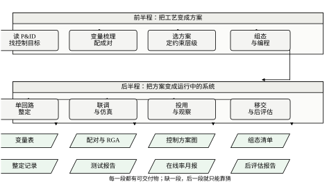
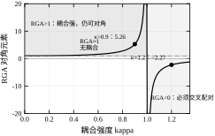
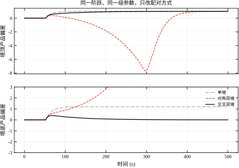
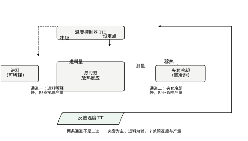
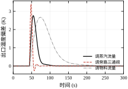
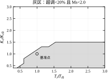
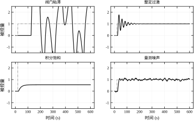
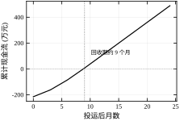
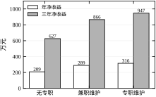

前两章分别讲“装置上会出什么问题”（第 111 章）与“高级应用怎么用”（第 112 章）。这一章回答最后一个问题：拿到一套 P&ID，怎么把它变成一套能投用、能维护、能验收的控制系统。这是第八部分的收尾，也是整套课程从“方法”回到“装置”的一步。
设想这样一个场景：你被叫到会议室，桌上摊着一张常减压装置的 P&ID。图上有塔、有换热器、有泵、有几十个仪表位号，每个位号旁边标着 TT、PT、FT、LIC 这样的字母组合，还有几条虚线连着阀门。
工艺专业问你：这套装置的控制方案怎么定？哪些变量要控、用什么控、几个回路、要不要串级？
这个问题没有唯一答案，但它有明确的判断依据。判断依据不在图上，而在三件事里：这套装置的控制目标是什么（产品质量、产量、能耗、安全，哪个优先）；变量之间怎么影响（动一个阀，哪些表会变）；约束在哪里（哪个变量不能越限、越了会怎样）。
这一章就是把这三件事变成一套可执行的流程。它不教你 PID 怎么整（第 44 章、第 106 章），不教你预测控制怎么推（第 58 章、第 80 章），也不教你阀门为什么会粘（第 111 章）。它教的是：这些东西在什么位置、按什么顺序、用什么判据拼成一个系统。
一套控制系统从图纸走到运行，要过四道关口，每一道都有明确的产物，也都可能失败。
第一道是目标。把工艺要求翻译成“控什么、控到多少、允许多大偏差”。这一关失败的典型表现是：控制器投用了，但没人说得清它到底在优化什么，于是谁都可以改设定值，改到最后没人知道原始目标是什么。
第二道是配对。决定哪个操作变量对应哪个被控变量。这一关失败的典型表现是：每个回路单独看都很稳，一起投就互相打架，操作员只好轮流切手动。第 113.2.2 节的相对增益矩阵就是为这一关准备的。
第三道是方案。单回路、串级、分程、比值、前馈，选哪一种。这一关失败的典型表现是“用单回路去解决需要串级的问题”：响应总是慢半拍，怎么整定都不满意。
第四道是实施。组态、调试、投用、移交。这一关失败的典型表现是投用当天很好，三个月后没人维护，一年后废弃。
四道关口的顺序不能颠倒。第 113.10 节会把第四道拆成清单，但要注意：前三道没做好，第四道做得再细也救不回来。图 113-1 是这条链路的全貌。

图里每一段下面都挂着一个交付物。这个画法是有意的：工程落地的质量，很大程度上取决于“每一段有没有留下可检查的东西”。没有变量表的项目，配对只能靠拍脑袋；没有整定记录的项目，换个人就调不动。
课程前面讲了很多算法，容易造成一种错觉：只要算法对，投用是水到渠成的事。实际不是。从“会算”到“能投”之间有三道落差。
第一道是模型落差。教科书里的对象是干净的：一阶加纯滞后，参数已知，没有噪声。现场的对象是脏的：增益随负荷变、纯滞后随流量变、阀门有死区、变送器有漂移。第 111 章列的每一条“假设不成立”，都会在投用时变成具体症状。第 113.6 节会用一组扫描说明：把模型当成准的，一个 30% 的增益误差就足以让回路从“很好”变成“不能投”。
第二道是时间落差。算法是毫秒级的，工程是月级的。一个回路从设计到投用，中间的等待、评审、停机窗口、班次安排，占掉了大部分时间。这一章会给出一个工时分布（第 113.9 节）：1060 个人时里，真正写控制器代码的不到三成。
第三道是人的落差。算法不会问“为什么”，人会。操作员看到阀自己动，第一反应是“它是不是错了”；工艺工程师看到产品质量波动，第一反应是“控制器没调好”。这些反应不是无理取闹，而是信息不对称。工程落地的一部分工作，就是把信息补上：让操作员知道控制器在看什么，让工艺知道控制器在让什么。
本章的边界很清楚：讲“从图纸到运行”的完整链路，不讲单点算法的推导。
PID 的参数怎么来、频域指标怎么算，见第 44 章与第 106 章；预测控制的滚动优化与稳定性，见第 58 章与第 80 章；Smith 预估器为什么能补偿纯滞后，见第 47 章与第 107 章。本章只用这些结论，不重复推导。
阀门特性、粘滞、量测噪声、积分饱和、SIS 与报警，第 111 章已经讲透，本章只在“选方案”时引用它们的结论，例如阀权度对局部增益的影响、粘滞对极限环的作用。
先进控制、实时优化、软测量、在线率，第 112 章已经讲透。本章与它的分工是：第 112 章回答“高级应用值不值得上、怎么算收益”，本章回答“基础方案怎么搭、搭好之后高级应用才有地基”。
还有一条边界是对“案例”的处理。本章用的三个装置（精馏塔、反应器、换热器）是简化的，参数取自公开的典型值，不是某个具体厂的实测数据。这样处理的原因是：具体数据涉及商业保密，而工程判断的依据是“结构与量级”，不是“小数点后第三位”。读者应当关注“为什么这样配、这个数说明什么”，而不是记住某个数。
选这三个装置，是因为它们各自代表一类典型难点。
精馏塔代表强耦合。塔顶的回流量与采出量、塔底的再沸量与采出量，四个变量两两影响，配错对就发散。第 113.4.1 节会给出一个具体的数：耦合系数 1.2 时，对角配对的相对增益是 -2.27，“每个回路都稳、一起投就发散”。
反应器代表热平衡与多通道。放热反应的温度控制至少有两条通道：调冷却介质、调进料。前者慢但不影响产量，后者快但直接减产量。选哪条、怎么配合，是典型的工程判断。第 113.4.3 节会给出一组对比：夹套通道峰值偏差 1.037 K，进料通道 0.548 K，但后者的调节量意味着 3% 的产量损失。
换热器代表方案选择。同一个出口温度，可以调蒸汽、调旁路、调被加热物料流量，三种方案的动态特性差一个数量级。第 113.4.5 节会给出三种方案的偏差与恢复时间：调旁路最快（24.5 s）但增益非线性，调物料最慢（130 s）且影响下游。
三类难点对应三种判断方法：耦合看 RGA，多通道看代价，方案选择看动态特性与工艺约束。这三种方法构成了本章“设计步骤”的主干。
§113.2 给出四个可算的关系：可调性与纯滞后、RGA 与配对、Ms 与鲁棒性、回收期与经济性。§113.3 是设计步骤，从读 P&ID 到方案冻结。§113.4 处理连续装置，用三个案例展开。§113.5 处理间歇与批次，重点是顺序控制与回路控制的接口。§113.6 用五组仿真说明可调性、耦合、整定窗口的关系。§113.7 解释每个参数在现场对应什么。§113.8 是整定方法与经验。§113.9 讨论改进与后评估。§113.10 是落地清单。§113.11 划边界并给第八部分收尾。§113.12 是代码。
如果这一章只留一句话，那就是：控制方案的质量，九成在设计阶段决定，一成在整定阶段决定。
这句话听起来像是贬低整定的价值，其实是抬高它的门槛。因为“设计阶段”包括了很多看起来不像设计的工作：读图、梳理变量、和工艺对目标、判断哪个约束是硬的。这些工作做对了，整定是一件几天就能完成的事；做错了，整定会变成一场持续几个月的拉锯，而且最终也不会成功。
后面各节的所有数字，都是为了支撑这一句话。
这一节的四个关系都是“可算的”，而且都能在投用前算出来。它们的用途不是给出精确答案，而是给出“该往哪个方向调、大概差多少”的判断。
一个回路的响应速度有一个物理上限，由纯滞后决定。无论控制器多聪明，从“看到偏差”到“看到响应”至少要等一个纯滞后 \theta。用一阶加纯滞后的模型 G(s)=Ke^{-\theta s}/(\tau s+1)，IMC 整定给出的闭环时间常数近似为
\tau_c=\lambda+\theta,\qquad \omega_c\approx\frac{1}{\lambda+\theta} \tag{113-1}
其中 \lambda 是可调参数，工程上取 \lambda\ge\theta 以保证鲁棒性。把 \lambda=\theta 代进去，闭环带宽上限约为 1/(2\theta)，即闭环上升时间不可能显著短于 2\theta。
这条式子解释了一个常见困惑：为什么同样整定，流量回路能做到秒级、成分回路只能做到分钟级。不是成分回路“难调”，而是它的 \theta 本身就大——分析仪有周期、取样管线有传输时间、塔的响应有滞后。第 113.6.3 节的扫描会把这个关系量化：\theta 从 1 s 增到 40 s，最优上升时间从 1.5 s 增到 75.5 s，比例基本线性。
由此得到一个设计判据：如果一个被控变量的要求响应时间小于 2\theta，那么无论怎么设计控制方案都达不到。这时要改的不是控制器，而是测量（换快速分析仪）、工艺（减少停留体积）或者目标（放宽要求）。这条判据在评审阶段就该用，而不是投用之后才发现。
比值 \theta/\tau 通常叫“可调性指标”。它小于 0.1 时回路很好调，0.1 到 0.5 时需要仔细整定，大于 1 时基本只能做“慢速修正”，不要指望它能压住快速扰动。
两个回路互相影响时，“哪个操作变量配哪个被控变量”不能靠直觉。Bristol 提出的相对增益矩阵（RGA）给了定量依据。
对一个 2\times2 系统，设稳态增益阵为
G=\begin{bmatrix} g_{11} & g_{12}\\ g_{21} & g_{22}\end{bmatrix} \tag{113-2}
则对角元素的相对增益为
\lambda_{11}=\frac{1}{1-g_{12}g_{21}/(g_{11}g_{22})},\qquad \lambda_{12}=1-\lambda_{11} \tag{113-3}
它的含义是“其他回路都开环时该通道的增益”与“其他回路都闭环时该通道的增益”之比。这个比值越接近 1，说明该通道受其他回路的影响越小，配对越合适。
三条判据：
第一，优先选 \lambda 接近 1 的配对。\lambda=1 表示完全解耦；0.7 到 1.5 之间通常可用；离 1 越远，耦合越强，整定越困难。
第二，\lambda<0 的配对不能用。负值意味着“闭合另一个回路会让这个回路的增益反号”，闭环后必然出现正反馈。此时必须换配对。
第三，\lambda 很大（比如大于 5）也不宜用。这种配对虽然稳定，但对模型误差极敏感，增益稍有偏差就会退化。
用第 113.6.2 节的扫描看这三条判据的实际效果。耦合系数 \kappa 从 0 增到 1.2，对角 RGA 依次为 1.00、1.10、1.56、5.26、-9.76、-2.27。对应的对角配对 IAE 为 16.42、18.07、25.79、82.06、475.34（\kappa=1.05）、发散（\kappa=1.2）；交叉配对在 \kappa=1.2 时反而只有 45.04。
图 113-2 画出了 RGA 随耦合强度的变化。\kappa<1 时 RGA 为正且随耦合增大，仍然可以对角配对，只是性能下降；\kappa=1 时 RGA 趋于无穷，系统在这一点的稳态增益阵奇异，任何配对都失效；\kappa>1 时 RGA 为负，必须交叉配对。

有一个性质值得记住：RGA 的每一行元素之和为 1。这条性质使得“把所有元素都推到 1 附近”在数学上不可能——一个配对的 \lambda 变大，另一个必然变小。所以配对问题本质上是“把耦合放在哪里”的问题，不是“消除耦合”的问题。
整定不能只看“响应好不好看”，还要看“模型错了会不会翻车”。衡量后者的常用指标是最大灵敏度
M_s=\max_{\omega}\left|\frac{1}{1+L(j\omega)}\right| \tag{113-4}
其中 L(j\omega) 是开环频率响应。M_s 的物理含义是“闭环对模型误差的最大放大倍数”：M_s=1.5 意味着在最不利的频率上，模型误差被放大 1.5 倍；M_s=2.0 是工程上常用的上限，超过之后回路的抗扰与稳定性都开始明显退化。
M_s 与增益裕度、相位裕度是一组：M_s=2.0 大致对应增益裕度 6 dB、相位裕度 45 度。它的好处是只用一个数就能概括鲁棒性，适合放在验收表里。
第 113.6.4 节把“超调小于 20%”与“M_s<2.0”两个条件同时加到 K_c-T_i 平面上，得到一个“整定窗口”：196 个网格点里有 66 个合格（33.7%），K_c/K_{c0} 的合格范围是 0.40 到 1.40，T_i/T_{i0} 的合格范围是 0.51 到 3.00。这个窗口的形状说明一件事：K_c 的上界很硬（超过 1.4 倍就不合格），而 T_i 的上界很松（增大到 3 倍仍然合格）。也就是说，整定时宁可把积分时间取长一点，也不要把比例增益取大。
两个回路都闭环时，一个回路的整定会影响另一个回路的等效对象。设对角配对的 RGA 为 \lambda，则回路 1 闭环后，回路 2 看到的等效增益变为原来的 1/\lambda 倍与 (1-1/\lambda) 倍的组合。简化地说，当 \lambda 远离 1 时，按单回路整定出的参数会让实际闭环增益偏离设计值，偏差量级为
\frac{\Delta K}{K}\approx\frac{1-\lambda}{\lambda} \tag{113-5}
\lambda=0.5 时偏差为 100%，\lambda=5 时为 -80\%。这就是“每个回路单独调都很好、一起投就打架”的数学解释：单独调时另一个回路是开环的，参数按开环整定；一起投时另一个回路闭环了，等效增益变了，原来的参数就不再合适。
工程上的三条对策：一是换配对，让 \lambda 接近 1；二是加解耦器，把耦合显式抵消；三是把所有回路一起投，同时整定（工程上调“联动整定”）。第三条最省事，但需要所有回路都能同时投用，实际很少具备条件。
工程落地最终要回答“值不值”。最简单的指标是简单回收期
T_{\text{pb}}=\frac{C}{B-M} \tag{113-6}
其中 C 是一次投入，B 是年收益，M 是年维护成本。回收期小于两年的项目通常容易通过评审，大于五年的一般会被要求重新论证。
第 113.9.4 节用一个实例算这笔账：1060 个人时、按 900 元/小时折算，加 120 万元硬件，投入 215.4 万元；年收益按 386 万元、分四档爬坡，第 9 个月累计现金流转正。这个数看起来很好，但它依赖一个前提：收益真的能实现。第 113.9.5 节会给出另一面：如果没人维护，在线率掉到 55%，年收益只剩 208.8 万元，三年净收益 626.5 万元，仍然为正，但只有专职维护方案（947.1 万元）的三分之二。
两个数放在一起说明：回收期算的是“最好情况”，后评估算的是“实际情况”。评审时看前者，运维时看后者。
第 113.8 节要处理“回路在摆，为什么摆”。判别不能靠猜，要靠特征量。四个常用的量都可以从历史趋势里算出来。
第一个是振荡周期。用误差信号的过零点间隔乘 2 估计。整定过激引起的振荡周期大约等于 4\theta（第 113.6.5 节的算例里，\theta=5 s、周期 24.5 s，比例 4.9）；阀门粘滞引起的振荡周期由粘滞带与积分速度决定，通常远长于 4\theta（同一算例里 105.5 s）。
第二个是饱和占比，即控制器输出贴在上限或下限的时间比例。大于 0.5 基本可以确定是积分饱和。
第三个是阀位静止占比，即阀位相邻采样间不变的时间比例。粘滞时这个比例很高（算例里 0.99），正常回路接近 0。
第四个是高频能量比，即输出一阶差分的标准差与输出的标准差之比。噪声主导时这个比值明显偏高（算例里 0.217，正常 0.038）。
四个量合起来构成一张判别表。第 113.6.5 节给出完整结果，第 113.8.4 节给出用法。用一句话概括：先看周期，再看饱和，再看阀动不动，最后看频谱。这个顺序是从“最容易排除”到“最难排除”。
四个式子分别对应工程上的四个问题：能做到多快（式 113-1）、该怎么配（式 113-3）、能扛多大误差（式 113-4）、值不值得做（式 113-6）。式 113-5 是式 113-3 的推论，用来说明“为什么一起投会打架”。
这四个关系有一个共同点：它们都需要“模型”。式 113-1 需要 \theta 与 \tau，式 113-3 需要稳态增益，式 113-4 需要完整的频率响应。所以第 113.3 节的第一件事就是“从 P&ID 与现场数据里把模型估出来”，而不是先画控制方案。
顺序很重要：先有模型，再有判据，再有方案。反过来做，方案会漂亮但不可行。
四条判据能算出“能不能做、怎么配、扛不扛得住、值不值”，但有三件事算不出来，必须靠人判断。
第一件是操作员愿不愿意用。一个回路技术上完全正确，但投上之后操作员每次交接班都切回手动，它就等于不存在。原因往往是“自动的动作和我习惯的不一样”：比如自动会把阀位调到 60%，而老操作员习惯守在 45%。这种情况不是整定问题，是信任问题。解法是让操作员参与调试，看着他熟悉的工况下自动怎么动作，而不是投完就走。
第二件是仪表可不可信。RGA 用的是稳态增益，增益来自测量；M_s 用的是频率响应，响应也来自测量。测量本身漂了，所有判据都建立在错的基础上。判据再漂亮，也挡不住一个零点漂移的变送器。所以第 113.8.6 节的定期复核里，“核对仪表”要排在“重算参数”前面。
第三件是这个回路该不该存在。有的回路是为了“看起来完整”而设的：一个不影响质量、不影响安全、只影响画面美观的量，被做成了一个自动回路，占着阀门、占着报警、占着维护工时。删掉它比优化它更有价值。判断方法是问：“这个回路切手动一个月，会有什么后果？”答不出后果的，可以考虑取消。
三件事都不在公式里，但都在项目里。第 113.10 节的清单与培训，很大程度上就是为了补这三件事。
设计阶段的产出不是一张控制方案图，而是一套能被别人复核的资料。图纸只是最后一张纸，前面还有变量表、配对表、模型、约束清单、测试记录。本节按实际工作顺序走一遍，七步，从拿到 P&ID 到方案冻结。
七步的顺序不能颠倒的原因是信息依赖：读图才知道有哪些变量，有变量才能算配对，配对定了才能选结构，结构定了约束才有归属，约束清楚了阶跃测试才敢做，测试数据齐了方案才敢冻结。跳过任何一步，后面都要返工。
P&ID 上画的东西很多，与控制方案直接相关的是五件。第一件是介质流向：物料从哪进、从哪出、经过哪些设备。流向决定了扰动的传播路径，也决定了前馈信号该从哪里取。
第二件是能量边界：哪里加热、哪里冷却、热量从哪来、余热去哪。能量边界决定了热量衡算的闭合点，反应器和换热器的控制方案几乎都由这一条决定。
第三件是已有回路：图上已经画了哪些控制阀、哪些变送器、哪些控制器。新增方案必须建立在已有硬件上，否则预算里要加阀门和仪表，回收期立刻变长。
第四件是仪表位号：位号里含着测量位置和量程。同一个温度，测点在塔顶回流罐还是在塔中部，动态特性差好几倍，纯滞后可能从几十秒变成几分钟。
第五件是联锁与放空：哪些点进了 SIS，哪些阀是联锁阀，哪些管线有安全阀和放空。这条最容易被忽略，但它决定了控制器的输出范围：一个阀如果同时受控制器和联锁指挥，控制方案必须给联锁让路。
以常减压塔顶系统为例。介质从塔顶出来经空冷器、水冷器进回流罐，一部分回流、一部分出装置；能量边界在空冷和水冷；已有回路通常是塔顶温度对回流量的单回路；位号里能看出温度测点在塔顶气相线上；联锁包括塔压高联锁放空和回流泵停联锁。五件事读完，塔顶温度该怎么控、能不能加串级、前馈从哪里取，基本就有轮廓了。
读完图，把变量列成清单。清单分四类：被控变量（CV）、操作变量（MV）、扰动变量（DV）、约束变量（AV）。四类的区别在于“谁决定它”：CV 由控制器决定去追给定值，MV 由控制器直接操纵，DV 由外界决定、控制器只能观测，AV 由工艺或设备限定、控制器不能越过。
| 类别 | 含义 | 示例 | 选取原则 | 常见错误 |
|---|---|---|---|---|
| CV | 要稳住或被送到给定值的量 | 塔顶温度、反应温度、出口温差 | 可测、对质量影响大、响应不过慢 | 选了一个测点代表性差的变量 |
| MV | 控制器可直接操纵的量 | 回流量、蒸汽阀、旁路阀 | 有调节余量、对 CV 增益大 | 阀门口径选得过大，小开度就饱和 |
| DV | 外部进入、不可操纵的量 | 进料量、进料温度、环境温度 | 可测、领先于 CV 变化 | 把可控量误当扰动 |
| AV | 设备与工艺限定的边界 | 塔压上限、炉管壁温、液位上下限 | 明确数值来源与响应时间 | 只写“注意不要超”，没有具体数 |
表 113-1 的最后一列是这张表真正的价值。一份变量清单如果只有前三列，它是描述；有了第四列，它才是设计依据。
一台典型设备列出的变量会有十几到三十个，但真正进控制方案的通常只有五到八个。筛选标准有三条：一是对产品质量或安全有直接影响，二是可测且测量滞后可接受，三是有独立可用的操作变量。三条不全满足的，进监视画面但不进控制方案。
扰动变量的选法要特别注意“领先性”。一个好的扰动信号必须比被控变量先动。进料量变化后塔顶温度要几分钟才反应，进料量就是好信号；塔顶温度自己动了再去调，已经晚了一个纯滞后。这一条决定了前馈能不能用，第 107 章讲过前馈的相位条件，这里只强调选变量时的判据。
变量齐了，接下来定“谁控谁”。多变量系统里这不是随便配的，要用相对增益矩阵。计算分五步。
第一步，确定工作点。所有增益都是在工作点附近线性化的结果，工作点选错，后面全错。工作点应当是设计工况或最常见的运行工况，不是铭牌工况。
第二步，估稳态增益。三个来源按可靠性排序：现场阶跃测试最可靠，历史数据回归次之，设计数据与机理模型再次。三个来源都拿不到时，只能先按经验值投运，再在运行中修正。
第三步，组装增益矩阵 G，按式 113-2 的形式排列。两输入两输出时是 2\times2，三输入三输出时是 3\times3，规模再大就要靠软件算。
第四步，按式 113-3 算 RGA 的每个元素。手算两阶时只需算一个 \lambda_{11}，其余由“每行每列之和为 1”推出。这一步要检查两件事：每个元素是否都在 [0,1] 附近，有没有负值。
第五步，判断。\lambda 在 0.7 到 1.5 之间，按对角配对即可；\lambda 超过 5，配对虽然正确但对模型误差极敏感，必须降低增益或加解耦；\lambda 为负，对角配对在物理上就是错的，必须换配对。
第 113.6.2 节的扫描给出了这条判据的具体后果。耦合强度 \kappa=0.9 时 RGA 为 5.26，对角配对仍能运行但 IAE 从 16.42 涨到 82.06；\kappa=1.05 时 RGA 变成 -9.76，对角配对的 IAE 是 475.34，交叉配对只有 127.66；\kappa=1.2 时对角配对直接发散，交叉配对 IAE 45.04。三个点连起来看，RGA 从 5 到负值的这一段是“必须动手”的区间。
RGA 为负时的处理有优先级。首选换配对，代价为零，只改组态；其次加静态解耦，代价是一个解耦矩阵和额外的整定工作；最后是降维，把耦合最严重的一个回路改为手动或改成定值控制，用牺牲一个变量换取整体稳定。三条路都要在方案冻结前定下来，投运后再改就是变更。
配对定了“谁控谁”，选型定“用什么结构控”。可选的结构有六种，表 113-2 把适用条件和代价列在一起。
| 结构 | 适用条件 | 典型场景 | 代价 |
|---|---|---|---|
| 单回路 | 扰动慢、纯滞后小、无强耦合 | 罐区液位、多数温度 | 最简单，优先选 |
| 串级 | 副回路纯滞后小、扰动频繁 | 蒸汽流量—温度、流量—液位 | 多一套仪表，整定两步 |
| 分程 | 一个 CV 需要两个 MV 接力 | 冷却水与冷冻水、大小阀 | 分程点与死区要标定 |
| 比值 | 两个流量必须保持比例 | 配比进料、燃烧空燃比 | 需一个可测的主流量 |
| 前馈 | 扰动可测且领先 | 进料量—塔顶温度 | 需要扰动模型，误差敏感 |
| 选择性 | 多个约束轮流起作用 | 压缩机防喘振、液位防抽空 | 切换逻辑要防抖动 |
表 113-2 的顺序就是选型顺序。能用单回路解决的，不要上串级；串级能解决的，不要上前馈。每加一层结构，就多一套仪表、多一组参数、多一个失效点。工程上有一条不成文的规矩：结构的复杂度必须由扰动强度来证明，不能由设计者的偏好来证明。
串级的判据是“副回路能不能把主要扰动挡在外面”。蒸汽压力波动是温度回路的主要扰动，如果蒸汽流量回路能在几秒内把它压住，温度回路看到的就是一个平滑的对象，效果明显；如果副回路本身的纯滞后和主回路差不多，串级只是多了一层惯性，反而更慢。
分程的判据是“一个操作变量的调节范围够不够”。放热反应先开冷却水、不够再开冷冻水，这是分程；如果冷却水单独就能覆盖全部工况，分程是多余的，还会在切换点引入扰动。
前馈的判据是“扰动可测且模型可信”。前馈是开环补偿，模型错了它会主动引入误差。第 107 章讲过前馈与反馈的互补关系，工程上的做法通常是“前馈粗补、反馈细修”，前馈只承担 60% 到 80% 的补偿量。
任何方案都会遇到“几个要求同时要满足”的局面。塔顶温度要控，塔压不能超，回流罐液位不能抽空，三个要求对应三个阀，但只有一个阀能真正动作。这类冲突不能靠整定解决，只能靠分层。
分层的顺序是固定的：设备约束高于质量约束，质量约束高于经济约束。设备约束指的是超了就损坏或危险，比如塔压、炉管壁温、压缩机喘振；质量约束指的是超了产品不合格；经济约束指的是超了只是少赚钱。三层的响应速度也依次变慢。
约束分硬软两级。硬约束进 SIS，由联锁独立执行，不经过 DCS 控制器；软约束进 DCS，用限幅、超驰、选择性控制实现。两级不能混：把硬约束做在 DCS 里，一旦控制器死机就没人管；把软约束做进 SIS，联锁会频繁动作，装置开不稳。
软约束要留余量。液位上限 90%，控制器的软约束应设在 85%，留 5% 给超调和测量误差；塔压上限 1.0 MPa，软约束设在 0.92 MPa。余量留多少取决于波动幅度，第 113.2.6 节的四个特征量可以用来估这个幅度。
分层还要写清“谁让谁”。选择性控制里的高选低选，本质上就是分层：两个信号谁更危险谁说话。切换必须有回差，否则在两个约束的交界处会来回抖。回差取约束量程的 2% 到 5%，太小会抖，太大会有一段无人管。
模型是前面所有判据的输入，而模型只能从测试来。阶跃测试看着简单，做错的方式很多，事故也大多出在这一步。
测试前要写清单。清单包括：测试目的（要辨识哪个通道）、测试幅度、测试时长、安全边界（最坏情况下哪个变量会超、超了怎么处理）、通信方式（现场谁盯、中控谁盯）、退出条件（出现什么现象立刻停止）。清单不写，测试就是赌博。
幅度的选取是 3% 到 5% 的阀位，或者 2% 到 5% 的给定值。幅度太小，信噪比不够，辨识出的增益不可信；幅度太大，非线性显现，线性模型失效。工程上常用“正负交替”的做法：正向 4%、回零、负向 4%、回零，两次的平均值抵消一部分非线性，差值则能看出死区和回差。
时长的选取是 3 到 5 倍的 \tau+\theta。只测到 1 倍时间常数，稳态增益根本还没露出来；测到 5 倍，基本到稳态。对于 \tau=20 s、\theta=5 s 的对象，单次阶跃要 75 到 125 s，加上回零和稳定时间，一个通道至少 5 分钟。
测试中最容易出的问题是“别的回路在动”。测塔顶温度时如果回流罐液位回路正在调，回流量被液位回路抢走，测出来的增益是假的。规范做法是测试期间把无关回路切手动并保持，测完再投回去。这一条要在清单里写明谁负责切、什么时候切。
数据质量的三个检查：一是噪声水平，噪声标准差应小于阶跃幅度的 5%，否则要先滤波；二是漂移，测试前后基线应基本一致，漂移超过 20% 说明有其他慢扰动；三是方向，正负两次的增益应当同号同量级，异号说明工作点跨过了非线性区。
测试记录要留原始数据，不要只留“辨识结果”。原始数据是趋势曲线的导出文件，采样周期与控制器一致，至少覆盖阶跃前两分钟到稳态后两分钟。只留结果的记录，事后无法复核；有人质疑“这个 \theta 是不是估小了”，只能重测。
记录里还要写清测试时的工况：负荷、进料组成、环境温度、哪些回路在手动。同一台设备在不同负荷下的 \theta 与 \tau 可以差一倍，不写工况，模型就没法用。这一条与第 113.8.5 节的“对象参数及来源”是同一件事的两面：来源包括数据，也包括数据产生的条件。
七步走完，冻结方案。冻结的不是一张图，是六份东西：变量清单（表 113-1）、配对表与 RGA 计算、结构图（哪种结构、几个回路）、整定初值（K_c、T_i、T_d 与来源）、约束清单（软硬、数值、余量）、测试记录（原始数据与辨识结果）。
冻结需要签字，签字的人要覆盖五个专业：工艺（变量选得对不对）、设备（约束值对不对）、仪表（阀门与变送器够不够）、安全（联锁会不会打架）、操作（投用时人能不能应付）。五个人里缺一个，后面就会在投用阶段补课。
签字前要过一次“假如”。假如进料量突然降 30%，哪个回路先动、哪个阀会打满、操作员看到什么；假如蒸汽压力掉一半，温度回路还能不能稳住；假如测量失效，控制器会往哪个方向跑。这三个问题答不上来，说明方案还没想透。
冻结后的任何改动走变更管理。变更要写清三件事：改什么、为什么改、改完谁验证。组态改动要留版本号，整定参数改动要留记录，硬件改动要重新做回路检查。第 113.10 节会把这条展开成完整的变更流程。
冻结的时间点也要选。方案冻结应当在详细设计开始之前，不能在施工图出来之后。冻结晚了，改动会牵动管线和电缆，代价是设计阶段改动的十倍以上。
连续装置是过程控制的主战场。本节用三个案例走一遍完整链路：精馏塔（强耦合）、反应器（热平衡）、换热器（方案选择）。三个案例分别对应第 113.1.5 节说的三类难点，数字全部来自 code/ch113_sim.py 的报告 [3]、[4]、[5]。
三个案例的组织方式相同：先说装置与难点，再说变量与配对，再说方案与结果，最后说结论。读者可以对照自己的装置替换数字，链条不变。
精馏塔是过程工业里最典型的强耦合对象。塔顶温度要靠回流量控，塔底温度要靠再沸器蒸汽控，但两股热量在同一个塔里上下传递：回流量加大，塔顶温度降，同时把更多轻组分压回塔内，塔底温度也跟着变；再沸量加大，塔底温度升，上升蒸气增多，塔顶温度也跟着变。
耦合的强弱用一个无量纲数 \kappa 表示，即交叉通道增益与主通道增益之比。\kappa 越大，两个回路越“抢活”。第 113.6.2 节扫描的六个工作点里，\kappa=1.2 对应 RGA 对角元素 -2.27，这个负号说明：对角配对的物理意义是反的，一个回路加大输出，另一个回路看到的却是反向的等效增益。
负 RGA 的后果不是“效果差一点”，而是“根本不能同时闭环”。仿真里 \kappa=1.2、两回路都按对角配对投入，闭环发散；换成交叉配对（塔顶温度控再沸量、塔底温度控回流量），IAE 立刻回到 45.04 和 37.71。这个对比是本案例最有说服力的一处。
实际装置上，\kappa 的大小与塔的回流比、相对挥发度、塔板数都有关系。回流比小的塔（比如粗分离塔）耦合往往更强，回流比大的塔（比如精馏段很长的塔）耦合相对弱。设计阶段拿不到准确的 \kappa，就用 RGA 的定性结论做保守选择：只要算出负值，一律换配对。
第一个方案是单端控制：只控塔顶温度，塔底靠固定回流比或固定再沸量。这是最简单的做法，也是很多老装置的实际状态。
仿真结果是这样的：塔顶 IAE 16.42，峰值 1.20；塔底 IAE 520.30。塔顶控得很好，塔底基本没人管。这个数说明单端控制的本质：把扰动全部推给另一端。进料一变，塔顶回路迅速动作把塔顶拉回来，代价是塔底的组分大幅漂移。
第二个方案是双端对角，即塔顶温度控回流量、塔底温度控再沸量。这是教科书的默认配法，在 \kappa=1.2 时直接发散。发散的原因不是参数没调好，而是配对错了：两个回路互相加强对方的偏差，形成正反馈。
第三个方案是双端交叉：塔顶温度控再沸量、塔底温度控回流量。IAE 分别是 45.04 与 37.71，峰值 0.39。两个回路的 IAE 都比单端方案的塔顶差，但塔底从 520.30 降到 37.71，总量级从“一个回路好、一个回路崩”变成“两个回路都中等”。
三个方案放在一张图里对比。图 113-3 的上半是塔顶响应，下半是塔底响应，三条曲线分别是单端、对角（只画到发散前）与交叉。

图里最值得注意的是对角方案那一段：它在 100 s 附近就开始单调爬升，没有任何回落的迹象。这种形态在现场有一个专门的说法，叫“两个回路互相追”——塔顶降了加大回流，回流加大把塔底也拉低，塔底回路加大蒸汽，蒸汽又把塔顶抬高，循环放大。
三个方案的取舍不是“哪个 IAE 小选哪个”。单端方案的塔顶 IAE 最小（16.42），如果产品质量主要由塔顶决定、塔底有下游装置兜底，单端是可接受的；如果两端都是产品，交叉配对是唯一可用的双端方案。这个判断要在方案冻结前做，用产品质量标准来定，不能用 IAE 来定。
放热反应器的难点是热平衡。反应放出的热量必须被及时移走，否则温度上升会加速反应、放出更多热量，形成正反馈。这类对象在控制上有个特点：稳定的工作点可能不止一个，参数选错会从一个稳定点跳到另一个。
移热有两条通道。第一条是夹套冷却：加大冷却水流量，降低夹套温度，通过壁面把热量带走。第二条是进料稀释：加大进料量或降低进料浓度，直接把反应速率压下来。
两条通道的物理机制完全不同。夹套冷却是“从外面抽热”，要穿过壁面，有热传导的时间常数；进料稀释是“从里面减热”，直接改变反应速率，几乎立即生效，但代价是产品浓度下降、后续分离负荷增加。
仿真里给反应器加一个等效 +3 K 的热生成扰动。夹套通道整定为 K_c=2.000、T_i=120.0，进料稀释通道整定为 K_c=5.000、T_i=40.0。两个整定值差别很大，原因在对象：夹套通道的时间常数长（120 s）、纯滞后大（30 s），只能慢调；进料通道快，可以给大增益。
夹套冷却方案的结果：峰值偏差 1.037 K，超过 2 K 的时长 0.0 s，最大调节量 3.15（归一化阀位）。进料稀释方案：峰值偏差 0.548 K，超过 2 K 的时长 0.0 s，最大调节量 3.34。
两个方案的峰值差了一倍，进料稀释明显更快。这不是整定水平的差别，是机制决定的：夹套要先降温、再传热、再影响反应，中间隔了两个惯性；进料稀释直接改浓度，反应速率当场就变。图 113-4 把两条通道画在同一张示意图上，右边是两条通道的响应。

但进料稀释不是更好的方案，它只是更快的方案。三个理由：一是产品浓度被稀释，后续精制负荷上升，这部分成本没有算在温度控制里；二是进料量本身往往由上游决定，能调的范围有限；三是频繁大幅调进料会让整个下游波动。
实际装置的常见做法是两条通道都用，但分工不同：夹套冷却做常规调节，承担稳态的移热；进料稀释做紧急抑制，只在温度接近上限时介入。这就是第 113.3.4 节说的选择性控制，两条通道按温度高低轮流起作用。
分工的关键在切换点。切换点定得太低，进料频繁动作；定得太高，夹套已经打满才切换，来不及。经验值是把切换点定在夹套阀位 85% 到 90% 的位置，用阀位而不是温度做切换信号，因为阀位反映的是“还有没有余力”，比温度更直接。
换热器的难点不在控制，在方案。同一个“出口温度要稳住”的要求，可以调蒸汽流量、可以调旁路三通阀、可以调物料流量，三条路都走得通，效果差好几倍。
调蒸汽流量是最常见的做法：出口温度低就开大蒸汽阀。它的优点是直接、不影响物料流量；缺点是蒸汽阀的调节范围有限，且蒸汽压力波动会直接串到温度上。
调旁路三通阀是把一部分物料短路，不经过换热器。它的优点是响应快，因为改变的是混合比例，不涉及换热器的热惯性；缺点是换热器的热负荷没变，只是“绕过”，能调的范围受旁路设计开度限制。
调物料流量是改变经过换热器的物料量。它的优点是调节范围大；缺点是物料流量往往由工艺决定，动它会牵连上下游，且流量变化会改变换热器的传热系数，形成非线性。
仿真给入口温度一个 +5 K 的阶跃，三个方案的结果如下。
调蒸汽流量：K_c=1.00、T_i=10.0，最大偏差 2.76 K，IAE 50.00，恢复时间 43.0 s。
调旁路三通阀：K_c=1.25、T_i=3.0，最大偏差 3.39 K，IAE 22.04，恢复时间 24.5 s。
调物料流量：K_c=0.83、T_i=30.0，最大偏差 2.67 K，IAE 150.00，恢复时间 130.0 s。
三个数放在一起，最有意思的是旁路方案：它的最大偏差最大（3.39 K），IAE 却最小（22.04）。原因是它恢复得快——偏差冲得高，但 24.5 s 就回来了，积分面积反而小。蒸汽方案偏差小但拖得久，43 s 才恢复，IAE 反而大。物料流量方案两头都差，130 s 才恢复。图 113-5 是三条响应曲线。

这个对比说明一个容易被忽略的评判标准：最大偏差和积分误差衡量的不是同一件事。最大偏差关乎“会不会触发报警或联锁”，IAE 关乎“平均偏离多久”。如果下游对瞬时高温敏感（比如有热敏物料），选蒸汽方案；如果下游只看累计影响，选旁路方案。
整定参数也反映了对象的差异。旁路方案的 T_i 只有 3.0 s，蒸汽方案是 10.0 s，物料方案是 30.0 s。积分时间短的方案，说明对象快、允许快调；积分时间长的方案，说明对象慢、快调会振荡。三个 T_i 的比值与三个对象的时间常数比值基本一致，这不是巧合，是式 113-1 的直接体现。
三个案例的装置、变量、结构都不同，但走的是同一条路。
第一，先算可调性，再谈效果。三个案例的可调性都先算过：精馏塔的耦合强度决定了能不能双端控，反应器的两条通道时间常数差四倍决定了整定值差六倍，换热器的三条通道时间常数差十倍决定了 T_i 差十倍。可调性不够的通道，整定得再好也没用。
第二，配对错误比参数错误更致命。精馏塔的对角方案发散，不是 K_c 大了一点，是配对根本错；换热器的三个方案都能用，说明配对正确时参数有调整空间。这条经验可以直接用：回路不稳时，先怀疑配对，再怀疑参数。
第三，方案的经济性要一起算。反应器的进料稀释更快，但要算下游负荷；换热器的旁路 IAE 更小，但要算旁路阀的投资；精馏塔的交叉配对更稳，但要重新标定两套回路的量程。第 113.9 节会把这三笔账合起来算。
第四，三个案例的结论都不是“最优方案”，而是“可用方案集合”。工程落地要的不是唯一最优，是在约束内能投、能维护、能交接的一组方案。这个观点会在第 113.11 节展开。
三个案例的装置不同，但替换的方法只有三步。
第一步，量出三个数。\theta、\tau、K，从一次阶跃测试里读。三个数一到手，先算 \theta/\tau：小于 0.1 说明回路好调，重点在精度；0.1 到 0.5 要仔细整定；大于 1 就要考虑改测量或改工艺，不要指望整定能救。
第二步，量出耦合。两个回路之间做一次单回路阶跃，另一个回路保持手动，看被影响多少。被影响量与主通道变化量之比就是 \kappa，代进式 113-3 得到 RGA。RGA 接近 1 就按对角配，超过 5 要降增益，为负必须换配对。
第三步，看有没有余量。阀门的正常开度在 30% 到 70% 之间算有余量；长期在 80% 以上或者 20% 以下，先解决硬件，再谈方案。余量不足时，任何整定都只是把问题推后。
三步做完，方案的大方向就定了：能单回路就单回路，耦合强就换配对，余量不足就报改造。这三步加起来不超过两天，比坐在办公室里画方案图有用。
三个案例里最值得照搬的不是数字，是判断顺序：先判对象，再判配对，再判余量，最后才谈参数。顺序反了，会在细节里绕不出来。
前面三节讲的是连续装置：物料一直在流，目标是把某个量稳在一个点上。间歇装置不是这样。一间歇反应釜一个批次可能八小时，期间要升温、保温、降温、出料、清洗，每个阶段的被控变量、操作变量、甚至控制目标都不一样。
这类装置的控制方案不能按“一个回路一个回路”设计，要按“一段时间一段时间的动作序列”设计。本节讲离散情形与连续情形的接口在哪里，边界怎么划。
连续控制的目标是一个点：温度稳在 180 摄氏度。间歇控制的目标是一条轨迹：30 分钟内从 25 摄氏度升到 180 摄氏度，升温速率不超过每分钟 6 摄氏度，到 180 摄氏度后保温 120 分钟，偏差不超过正负 1 摄氏度。
目标从“点”变成“轨迹”，带来三个变化。
第一，给定值是时间的函数。连续回路的给定值通常是一个常数，间歇回路的给定值是一条曲线，由配方给出。给定值的变化速率本身就是一个约束，升得太快会超调，升得太慢批次时间拉长、产能下降。
第二，回路的投退是计划好的。连续回路的控制器一直在线，间歇回路的控制器在某个阶段投入、某个阶段退出。投退的时刻由顺序程序决定，不由操作员决定。
第三，评价指标不同。连续回路看 IAE 和超调，间歇回路看批次时间、批次间一致性、以及是否满足轨迹容差。一个批次内温度曲线偏离 2 摄氏度但批次时间缩短 10%，可能是好事；在连续装置上这是不可接受的。
间歇装置上有两层逻辑：配方层和回路层。配方层管“什么时候做什么”，回路层管“做到什么程度”。两层之间的边界要划清，划错了会出两类问题。
第一类是把整定参数写进配方。有人认为不同牌号要用不同 PID 参数，于是把 K_c、T_i 放进配方表。这样做的问题是：整定参数是设备属性，不是产品属性；同一台釜换一个牌号，对象的增益和时间常数基本不变，参数不该变。写进配方后，每次改配方都要重新验证整定，维护量成倍增加。
第二类是把工艺判据写进回路。比如“温度到 178 摄氏度就开始计时”，这条判据如果做在温度控制器的偏差判断里，控制器就同时承担了控制与逻辑两个职责，改一处会影响另一处。正确做法是这条判据进顺序程序，控制器只负责把温度送到给定值。
正确的边界是：配方只写工艺量（给定值曲线、时间、容差、切换条件），回路只写控制量（结构、参数、限幅）。第 109 章讲间歇过程时给过配方模型的完整结构，这里只强调这条边界。
两层之间的接口有四类信号，每一类都要定义清楚。
第一类是使能信号。顺序程序告诉回路“现在轮到你工作”，回路从跟踪状态切到自动。这个切换必须无扰：切换前回路处于跟踪（输出跟随一个外部值），切换瞬间不能有跳变。
第二类是给定值。顺序程序给回路一个给定值，或者一条给定值曲线。如果给的是曲线，回路需要支持斜坡给定，否则阶跃给定会引起超调。
第三类是完成判据。回路告诉顺序程序“我到位了”。判据不能只看瞬时值，要看“进入容差带并保持若干秒”，否则噪声会让判据反复触发。
第四类是异常返回。回路发现异常（测量失效、阀门卡涩、长时间到不了位）时，要通知顺序程序，由顺序程序决定是等待、报警还是转入手动。
四类信号里最容易出错的是第一类。无扰切换的做法有三条：给定值跟踪（手动时给定值跟随测量值）、积分预置（切换瞬间把积分项设成使输出等于当前阀位的值）、阀位保持（切换瞬间输出不跳）。三条缺一条，切换就会有一个冲击，冲击幅度取决于缺的那一条。
间歇装置的顺序逻辑用状态机描述。典型的状态有：空闲、进料、升温、保温、降温、出料、清洗。每个状态有明确的入口条件、出口条件、以及在该状态下哪些回路投用。
状态机有三条设计规矩。
第一，转移条件必须可测。条件不能是“操作员觉得差不多了”，必须是可测的量或确定的时间。时间条件也要有测量确认，比如“保温 120 分钟且温度在容差内”。
第二，禁止跨状态跳转。从升温直接跳到出料，中间少了保温和降温，会出安全事故。状态机要显式定义允许的转移，不允许的转移一律拒绝并报警。
第三，联锁在任何状态都有效。联锁不隶属于某个状态，它是独立的一层，与状态机并行运行。这一点与连续装置相同：联锁进 SIS，状态机进 DCS 或批控系统，两者不互相依赖。
联锁与状态机的交叉点要专门测。比如“温度超高联锁”在保温状态会触发，在清洗状态不该触发（清洗时釜是空的）。这类条件要在联锁逻辑里写明状态限定，测试时要逐个状态验证。
连续装置投用一次，间歇装置每批投用一次。投用的验收标准因此不同，主要有三条。
第一，批次间一致性。同一配方连续做三批，三条温度曲线的重合度是核心指标。重合度差，说明控制或操作有随机因素。常见原因是升温段的切换点靠人工判断、或者回路投退时刻不固定。
第二，首批与末批的差异。首批设备是冷的，末批设备是热的，同一套参数在两种初始条件下的响应不同。如果差异明显，要用分段参数或前馈补偿，不能指望一套参数包打天下。
第三，清场与切换的验证。换牌号时要清场，清场后的第一批最容易出问题：残留物料改变反应条件，或者清洗液没排净稀释了进料。控制方案要能识别这种异常，比如升温速率明显偏离配方时报警。
批次数据的留存要求也比连续装置高。连续装置存趋势就够了，间歇装置要存每一批的完整曲线、每次投退的时刻、每个报警的时间。这批数据既是质量追溯的依据，也是下一轮整定的依据。
把上面的原则落到一个具体装置上。一间歇反应釜，蒸汽夹套加热，冷却水降温，配方要求 30 分钟从 25 摄氏度升到 180 摄氏度，然后保温 120 分钟。
升温段的控制目标不是“温度等于给定值”，而是“温度按斜率上升”。做法是把给定值做成斜坡，斜率由配方给出，回路用 PI 跟踪。这里不能用太强的比例作用，否则在斜坡起点会有一次冲击。
升温到 175 摄氏度时要提前切保温。提前量取 5 摄氏度，原因是阀门关小到热量真正降下来有一个纯滞后，等到了 180 摄氏度再切，温度必然冲过 180。提前量的大小与升温速率有关：速率快，提前量要大；速率慢，提前量可以小。这一条与第 113.4.3 节反应器的道理相同，都是“用可测的领先量补偿滞后”。
保温段的控制目标变成“稳在 180 摄氏度”，此时可以投串级：外环温度、内环夹套温度或蒸汽流量。切换的瞬间要做无扰：给定值从斜坡的末端值平滑接到 180，积分项预置，输出不跳。
降温段的控制目标变成“按速率降到 60 摄氏度以下”。此时蒸汽阀全关，冷却水阀投用，如果是分程控制，分程点要在这个阶段自动切换。很多装置的降温段出问题，原因就是分程点没跟着状态改，冷却水阀一直开不到位。
一个批次的全过程，回路在不同阶段承担不同任务，参数也可能不同。把这些阶段、切换点、参数组写进配方与状态机，才是完整的方案。只写“温度回路 PID”，是没写完。
实际装置上，连续与间歇往往连在一起：上游是连续的反应或分离，下游是间歇的配料与包装；或者反过来，间歇的釜分批出料，送到连续的塔里。衔接处是控制最容易出问题的地方。
第一个问题是流量不匹配。间歇装置是断续取料，连续装置要求稳定进料。中间没有缓冲，上游就得跟着下游的节奏忽大忽小，连续回路的扰动会非常大。解法是加缓冲罐，把“断续”变成“连续”，缓冲罐的容量按一个批次的时间乘平均流量估。
第二个问题是切换时的物料平衡。一个牌号做完换下一个，管线里的残留物料、罐里的存料、塔里的持液都要处理。处理方式有两种：一种是“清空再换”，停车、排料、清洗，时间长但没有交叉污染；另一种是“推着换”，新料把旧料顶出去，中间有一段过渡品，时间短但要有过渡罐。选哪种取决于产品要求和过渡品的处理能力。
第三个问题是控制权的交接。批控系统管配方与顺序，DCS 管回路与联锁，两套系统之间有信号交互。交接要明确“谁说了算”：某个阀在批次阶段由批控系统的顺序程序控制，在保温阶段由 DCS 的温度回路控制，切换时刻与切换方式必须写清楚，否则会出现两套系统同时写一个输出的情况。
第四个问题是批次数据与连续趋势的接口。连续装置看趋势，间歇装置看批次记录，两套数据的采样率、存储周期、保留时间都不同。质量追溯时要能对上，做法是给每个批次一个编号，批次记录里带上时间戳，趋势数据按时间戳关联。
这四个问题在方案设计阶段就要考虑，不能等到投用时才发现。衔接处的方案往往不属于任何一章的标准结构，需要单独设计，单独评审。
第 113.3 节讲怎么做方案，本节讲怎么判断方案好不好。判断要用数，不能用“看起来还行”。本节给四个指标、三组扫描、一张判别表，全部来自 code/ch113_sim.py。
评价一个回路，最常用的四个量是：超调、IAE、调节时间、峰值偏差。
超调是响应超过给定值的最大百分比。它关乎安全裕度：超调 30% 意味着给定值离联锁值要有 30% 的距离。
IAE 是误差绝对值的积分。它关乎平均偏离程度，也关乎能耗和产品质量的累计损失。
调节时间是进入并保持在容差带内的时间。它关乎批次时间、切换速度、以及操作员的等待。
峰值偏差是扰动下偏离给定值的最大值。它与超调不同：超调是设定值跟踪问题，峰值偏差是扰动抑制问题。
四个量不总是一致。第 113.4.6 节的换热器案例里，旁路方案的最大偏差 3.39 K 最大，IAE 22.04 却最小；蒸汽方案最大偏差 2.76 K 最小，IAE 50.00 反而大。选哪个指标，取决于下游在乎“冲一下”还是“拖很久”。
工程验收表上通常写两个：超调和 IAE。前者防事故，后者防浪费。只写一个，方案会朝那个指标偏。
四个量之间有大致的换算关系，可以用来快速判断数据是否合理。一阶加纯滞后对象在阶跃下，IAE 大致等于稳态误差为零之前的偏差面积，量级是峰值偏差乘恢复时间的一半。用换热器的蒸汽方案验算：峰值 2.76 K、恢复 43 s，乘积的一半约 59 K·s，与表里的 50.00 同量级。差的部分来自上升段与拖尾的形状，不影响量级判断。
这种估算法在现场很有用：拿到一条趋势，先估 IAE 的量级，再看报告里的数是否合理。如果差一个数量级，多半是单位错了（秒与分钟、摄氏度与开尔文），或者积分区间没对齐。
耦合扫描的做法是固定两个回路的整定，只改耦合强度 \kappa，看性能怎么变。表 113-3 是扫描结果。
| \kappa | 对角 RGA | 对角配对 IAE（回路 1/回路 2） | 对角峰值 | 交叉配对 IAE | 结论 |
|---|---|---|---|---|---|
| 0.00 | 1.00 | 16.42 / 0.00 | 1.00 | 发散 | 对角最优 |
| 0.30 | 1.10 | 18.07 / 5.49 | 1.00 | 发散 | 对角最优 |
| 0.60 | 1.56 | 25.79 / 15.62 | 1.00 | 发散 | 对角可用 |
| 0.90 | 5.26 | 82.06 / 73.53 | 0.97 | 925.96 / 1252.47 | 对角勉强，需降增益 |
| 1.05 | -9.76 | 475.34 / 467.46 | 1.90 | 127.66 / 119.78 | 交叉配对明显更好 |
| 1.20 | -2.27 | 发散 | — | 45.04 / 37.71 | 必须交叉 |
表里最值得看的是 \kappa=0.9 那一行。RGA 5.26，对角配对还能跑，IAE 从 16.42 涨到 82.06，是五倍。此时如果只看“稳不稳”，结论是“能用”；如果看“用得好不好”，结论是“该动手了”。工程的判断标准应当是后者。
\kappa=1.05 那一行更有意思：对角配对 IAE 475.34，交叉配对 127.66，差了近四倍；但交叉配对也不是好方案，127.66 仍然远大于耦合为零时的 16.42。这说明 RGA 为负时，换配对只是“从不能用变成勉强能用”，真正的解法是降低耦合本身（改工艺流程）或上多变量控制器。
\kappa=1.2 那一行是压垮骆驼的最后一根稻草：对角配对直接发散。发散不是参数问题，K_c 减半也救不回来——RGA 为负时，闭环特征方程在右半平面有根，降增益只能让发散变慢。
第二个扫描固定对象时间常数 \tau=20 s，改纯滞后 \theta，每个 \theta 下取三档 \lambda（\theta/2、\theta、2\theta），记录上升时间与超调。表 113-4 是结果，格式为“上升时间(s)/超调(%)”。
| \theta/\tau | \theta (s) | \lambda=\theta/2 | \lambda=\theta | \lambda=2\theta |
|---|---|---|---|---|
| 0.05 | 1.0 | 1.0 / 68.2 | 1.5 / 38.6 | 2.5 / 10.7 |
| 0.10 | 2.0 | 2.5 / 42.7 | 3.5 / 20.1 | 6.0 / 1.7 |
| 0.25 | 5.0 | 6.0 / 27.4 | 9.0 / 9.7 | 17.5 / 0.0 |
| 0.50 | 10.0 | 12.5 / 22.3 | 18.5 / 6.5 | 37.5 / 0.0 |
| 1.00 | 20.0 | 25.0 / 19.7 | 37.5 / 5.1 | 77.5 / 0.0 |
| 2.00 | 40.0 | 50.0 / 18.5 | 75.5 / 4.5 | 157.0 / 0.0 |
两个规律。
第一，上升时间与 \theta 成正比。\theta=1 时最激进的一档只要 1.0 s，\theta=40 时同样的激进档要 50 s，比例 50。这验证了式 113-1：闭环速度的上限由纯滞后决定，与时间常数关系不大。
第二，超调与 \theta/\tau 成反比。\theta/\tau=0.05 时，最激进档超调 68.2%；\theta/\tau=1 时只有 19.7%；\theta/\tau=2 时降到 18.5%。原因是大纯滞后的对象本身把高频成分滤掉了，闭环不容易振。
这两条合起来给出一条反直觉的整定经验：快对象要保守，慢对象可以激进。流量回路 \theta/\tau 小，按 \lambda=2\theta 整；温度回路 \theta/\tau 大，按 \lambda=\theta 甚至 \theta/2 整。这与“流量好调所以随便调”的直觉正好相反——流量好调，但调猛了超调会很大。
还有第三条规律，表里不显眼但很有用：\lambda 从 \theta 缩到 \theta/2，上升时间的收益远小于超调的代价。以 \theta=5 s 那一行为例，\lambda 从 5 减到 2.5，上升时间从 9.0 s 缩到 6.0 s，只快了三成；超调从 9.7% 涨到 27.4%，涨了近两倍。这笔交换在多数场合不划算，除非工艺明确要求更快的跟踪。
反方向也一样不对称：\lambda 从 \theta 加到 2\theta，上升时间从 9.0 s 拖到 17.5 s，慢了近一倍，超调只从 9.7% 降到 0.0%。所以 \lambda=\theta 附近是一个“性价比拐点”：再激进，超调涨得快；再保守，速度掉得快。IMC 把 \lambda=\theta 作为缺省值，理由就在这里。
第三个扫描在 K_c-T_i 平面上打网格，14 乘 14 共 196 个点，每个点跑一次闭环，同时检查两个条件：超调小于 20%，且 M_s<2.0。两个条件都满足的记一个“合格”。
结果是 66 个点合格，占 33.7%。这个比例说明一件事：能用的参数不是“一个点”，是一片区域，但这片区域不大。图 113-6 是窗口的形状。

窗口的形状不对称，这是本节最有用的一条信息。K_c/K_{c0} 的合格范围是 0.40 到 1.40，向下能减到四成，向上只能加四成；T_i/T_{i0} 的合格范围是 0.51 到 3.00，向下只能减到一半，向上能加到三倍。
不对称的原因在 M_s。加大 K_c 会同时抬高开环增益和截止频率，M_s 迅速上升，很快越过 2.0；加长 T_i 只是减弱积分作用，回路变慢，M_s 反而下降。所以上界紧、下界松。
这条不对称直接推出一条可执行的经验：整定时宁可把积分时间取长，也不要把比例增益取大。取长积分时间，最坏结果是响应变慢、IAE 变大；取大比例增益，最坏结果是超调、振荡、甚至触发联锁。两种错误的代价不对等。
窗口还有一个用法：判断当前参数“离边界有多远”。如果现场参数在窗口中心，说明有调整空间；如果贴在边界上，任何工艺变化都可能把它推出去，此时应该先改结构（加前馈、换配对），而不是继续调参数。
回路在摆，原因有四种：阀门粘滞、整定过激、积分饱和、量测噪声。四种现象看起来都是“曲线在动”，处理方式完全不同，判错了会越调越糟。
第 113.2.6 节给了四个特征量，这里给出实测值。表 113-5 是四类成因在 200 s 之后稳态段的特征量。
| 成因 | 周期 (s) | 饱和占比 | 阀位静止占比 | 最大跳变 | 高频能量比 |
|---|---|---|---|---|---|
| 阀门粘滞 | 105.5 | 0.00 | 0.99 | 9.83 | 0.038 |
| 整定过激 | 24.5 | 0.00 | 0.15 | 0.01 | 0.137 |
| 积分饱和 | 0.0 | 1.00 | 1.00 | 0.00 | 0.025 |
| 量测噪声 | 11.8 | 0.00 | 0.00 | 2.78 | 0.217 |
四行数据的形态差别很明显，判别可以写成一条规则链。
第一步看饱和占比。大于 0.5 直接判积分饱和。积分饱和的特征是输出贴边不动，误差却一直在积累，所以曲线表现为“慢慢偏出去，突然回来”。
第二步看阀位静止占比。大于 0.8 且最大跳变明显（本例 9.83）判阀门粘滞。粘滞的特征是阀位长时间不动、然后突然跳一段，周期由粘滞带与积分速度共同决定，通常远长于 4\theta。
第三步看高频能量比。大于 0.15 判量测噪声。噪声的特征是阀位小幅高频抖动，周期短、跳变小，但能量集中在高频。
第四步看周期。前三步都排除后，如果周期接近 4\theta（本例 \theta=5 s、周期 24.5 s、比例 4.9），判整定过激。过激的特征是等幅振荡、阀位连续变化、跳变很小。
图 113-7 是四种成因的波形，2 乘 2 排列，每格标注了对应的特征量。

图的用法是“对形状”。现场拿到一条趋势，先看形状像哪一格，再用表 113-5 的数确认。形状加数字双重确认，比单看其中一个可靠。
判别顺序不能颠倒。先看饱和是因为饱和会让其他三个量全部失真：输出贴边时，阀位当然不动，静止占比自然接近 1，如果先看静止占比就会误判成粘滞。这条经验是用错误换来的，现场排查时最容易犯的就是这个错。
M_s 的定义在式 113-4 给过，这里说它在整定中的用法。
M_s 是“闭环对模型误差的最大放大倍数”，它与两个经典裕度的对应是：M_s=2.0 约等于增益裕度 6 dB、相位裕度 45 度；M_s=1.5 约等于增益裕度 8 dB、相位裕度 55 度。工程上把 2.0 当作红线，超过之后回路的抗扰能力与稳定性同时退化。
用 M_s 判断鲁棒性比看裕度方便，原因是它只需要一条开环频率响应，不需要在 Nyquist 图上找两个交点。第 113.12 节的 ms_value() 就是按式 113-4 直接算的，输入 K_c、T_i、\tau、\theta，输出一个数。
M_s 与性能是一对矛盾。把 K_c 加大，截止频率上移，响应变快，M_s 上升；把 T_i 加长，相位滞后减小，M_s 下降，但 IAE 变大。第 113.6.4 节的整定窗口本质上是这条矛盾曲线在平面上的投影：K_c 那一侧的上边界由 M_s 卡住，T_i 那一侧的下边界由积分过强引起的振荡卡住。
工程上还有一个更粗的判断：模型增益误差 30% 时回路仍能稳定，就算合格。这条判据比 M_s<2.0 宽松，适合没有频域工具时的快速检查。做法是把 K_c 乘 0.7 和 1.3 各跑一次阶跃，两次都不振荡、不超调过多，就算过关。
鲁棒性的余量要给谁，取决于对象的可预测性。对象稳定、工艺不变、模型辨识充分，余量可以少留，取 M_s 接近 2.0；对象时变（催化剂老化、换热器结垢）、模型粗糙，余量要多留，取 M_s 在 1.5 附近。这一条决定了同一台设备在不同时期的整定不该一样，第 113.9 节讲的后评估会回到这一点。
指标定错，后面全错。定指标有三条原则。
第一，指标要对应一个约束。超调对应“离联锁值多远”，恢复时间对应“下游能等多久”，IAE 对应“累计损失多大”。说不清对应哪个约束的指标，不要写进验收表。见过把“上升时间小于 5 s”写进验收书的项目，问对应什么约束，答不上来，最后这个指标成了摆设。
第二，区分设定值跟踪与扰动抑制。两者的指标不能混。设定值跟踪看超调与上升时间，扰动抑制看峰值偏差与恢复时间。有的回路设定值一年不动一次，却按跟踪指标验收，这是错的。
第三，要有基线。验收不是看绝对值好不好，是看比改造前好多少。基线取改造前同期的历史数据，至少一个月，覆盖不同的工况。没有基线的验收，等于没有验收。
三条原则落到具体数字上，一张验收表大致是四行：设定值阶跃的超调（例如小于 20%）、扰动下的峰值偏差（例如小于工艺容差的一半）、恢复时间（例如小于 3 倍 \theta）、以及 M_s（小于 2.0）。四行之外可以加“手动干预次数下降比例”这类运行指标，但不要加太多，指标越多越难验收。
还有一条容易被忽略：验收要在稳定工况下做。装置刚开工、负荷还在爬、或者原料换了批次，此时的数据不能用来验收。验收的工况要写进方案，与基线工况一致，否则比出来的差异是工况差异，不是控制效果。
参数的意义这件事，书上讲一遍，现场还要再讲一遍。原因是同一个符号在三个地方有三种读法：控制理论里它是传递函数的系数，DCS 组态里它是画面上的一个数，操作员嘴里它是“那个劲大不大”。
本节把三个读法对齐。六个符号：K_c、T_i、T_d、\tau、\theta、\lambda。前三个是控制器的，后三个是对象与整定目标的。分清这两组，很多混淆就消失了。
控制器参数有三个：比例增益 K_c、积分时间 T_i、微分时间 T_d。这三个是“你能改的”。
对象参数有两个：时间常数 \tau、纯滞后 \theta。这两个是“设备决定的”，改不了，只能测。
整定目标有一个：闭环时间常数 \lambda。这个是“你选的”，选大选小体现了保守与激进的取舍。
六个符号的关系是：\lambda 决定 K_c 与 T_i，K_c 与 T_i 又由 \tau、\theta 算出。式 113-1 与第 44 章的 IMC 整定公式连起来，就是一条从对象到参数的完整链路。第 44 章讲 PID 本体，第 106 章讲单回路整定，本节只讲这些符号在现场的含义，不重复推导。
分组的一个直接用处是判断“能不能调”。有人抱怨“这个回路怎么调都不行”，先要问：是 K_c 调不上去，还是 \theta 太大？前者是参数问题，后者是对象问题。对象问题调参数是白费力气。
K_c 是比例增益，物理含义是“误差每变化一个单位，输出变化多少个单位”。它是有量纲的：误差的单位是摄氏度，输出的单位是百分比阀位，K_c 的单位就是“百分比每摄氏度”。
这一点经常被忽略。两个回路的 K_c 都是 2.0，一个控温度（量程 0 到 200 摄氏度）、一个控压力（量程 0 到 1 MPa），实际作用完全不同。所以现场比较参数要先归一化：把 K_c 乘以测量量程再除以输出量程，得到无量纲增益，才有可比性。
K_c 调大，响应变快，抗扰变强，但超调增大、稳定性下降。第 113.6.4 节的窗口给出上界：K_c 超过基准值的 1.4 倍就不合格。这个上界比很多人想的窄。
K_c 还有一个常被忽略的作用：它决定了控制器对噪声的敏感度。K_c 大一倍，测量噪声进到阀门的幅度也大一倍。噪声大的回路（比如差压变送器测小流量），K_c 必须压小，这不是保守，是必须。
T_i 是积分时间，物理含义是“误差持续 T_i 秒，积分作用贡献的输出等于比例作用贡献的输出”。换个说法：T_i 是“积分把同样的误差补完需要多久”。
T_i 调大，积分作用变弱，消除静差变慢，但稳定性提高；T_i 调小，积分作用变强，静差消得快，但容易振荡。第 113.6.4 节的窗口给出的是下界紧、上界松：T_i 可以加到三倍，但不能减到一半以下。
现场有一个常用的估算：T_i 应当接近对象的时间常数 \tau。IMC 整定给出的就是 T_i=\tau。这个关系有物理意义：积分的作用是“记住过去一段时间的误差”，记住的长度应当与对象自己“忘记”扰动的长度匹配。对象慢，积分要慢；对象快，积分可以快。
T_i 设得太小的典型现象是“慢摆”。曲线以固定周期上下摆，周期大约是 T_i 的几倍，阀位连续动作，没有跳跃。第 113.6.5 节的整定过激案例就是这种形态，周期 24.5 s，跳变只有 0.01。
T_d 是微分时间，物理含义是“按误差的变化速度提前动作，提前量相当于 T_d 秒后的误差”。它的作用是增加相位超前，抵消一部分纯滞后带来的相位损失。
理论上微分对纯滞后对象很有用，实际上过程工业里用得很克制。三个原因。
第一，微分放大噪声。误差的微分就是测量噪声的导数，噪声频率越高被放大得越厉害。温度信号噪声小，可以用；流量信号噪声大，基本不能用。
第二，微分对纯滞后无能为力。纯滞后段的导数为零，微分看到的“未来”是假的。第 47 章讲 Smith 预估时讲过这一点，真正的解法是预估而不是微分。
第三，微分让整定变复杂。三个参数互相影响，现场调不动。多数装置的实践是 T_d=0，用串级或前馈替代微分的作用。
T_d 该用的场合有两个：一是大惯性、小滞后的温度回路（比如电加热炉），二是需要快速抑制扰动的场合。用时通常配一个一阶滤波，滤波时间取 T_d 的 0.1 到 0.2 倍，压住高频放大。
\tau 是时间常数，物理含义是“阶跃输入后，输出走到最终变化量的 63% 所需的时间”。它描述对象的“惯性”，反映的是容量与阻力的乘积。
\theta 是纯滞后，物理含义是“输入变化后，输出完全不动的那段时间”。它描述的是“传输与等待”，反映的是管线长度、取样延迟、分析仪周期。
两个时间的区别在频域里很清楚：\tau 让幅值衰减、相位滞后，但衰减与滞后是“成对”的，可以用增益换；\theta 只带来相位滞后，不衰减幅值，是纯粹的“坏消息”。所以闭环带宽的上限由 \theta 而不是 \tau 决定，这就是式 113-1 的物理来源。
现场的估法很简单：给一个阶跃，看输出什么时候开始动，那是 \theta；看输出走到 63% 用了多久，那段时间减去 \theta 是 \tau。粗糙但够用，多数回路的整定不需要更精确的模型。
\theta 还有一个隐藏来源：扫描周期与滤波。控制器每 0.5 s 采一次，等效增加 0.25 s 的滞后；一阶滤波时间常数 2 s，等效增加约 2 s 的滞后。这些“人为滞后”在小 \theta 的快回路上占比很大，不能忽略。
表 113-6 把六个符号的含义、单位、典型范围与调大后的效果列在一起。表里的范围是过程工业的常见值，不是理论界限。
| 符号 | 含义 | 单位 | 典型范围 | 调大后 | 调大的风险 |
|---|---|---|---|---|---|
| K_c | 比例增益 | %/工程量 | 0.5–5 | 响应快、抗扰强 | 超调、振荡、放大噪声 |
| T_i | 积分时间 | s | 5–600 | 稳定性好 | 静差消得慢、IAE 大 |
| T_d | 微分时间 | s | 0–0.25\tau | 超前补偿强 | 放大噪声、易饱和 |
| \tau | 对象时间常数 | s | 1–3000 | — | — |
| \theta | 对象纯滞后 | s | 0.5–600 | — | — |
| \lambda | 闭环时间常数 | s | \theta–3\theta | 保守、鲁棒 | 响应慢、被扰动牵着走 |
表里最容易被误读的是 K_c 的“0.5 到 5”。这个范围跨度大，是因为单位不同：温度回路常见 1 到 3，流量回路常见 0.5 到 1.5，液位回路常见 1 到 5，压力回路跨度最大。跨回路比较之前先归一化，否则比出来的是量程差，不是整定水平。
另一个常见误读是把 T_i 的单位当成“分钟”。很多 DCS 的默认单位是秒，有些是分钟，组态时看错单位会让积分作用差 60 倍。这个错误在现场发生过不止一次，表现是“参数看着正常，回路却完全不动或剧烈振荡”。设置参数前先确认单位，这一条应当写进组态检查表。
三个参数不是独立的，改一个会改变另外两个的实际效果。这一点在书上往往被公式掩盖了，现场必须知道。
第一条关系：积分作用的强弱由 K_c/T_i 决定，不由 T_i 单独决定。K_c 加倍、T_i 也加倍，积分增益不变，但比例作用加倍。所以“把 K_c 和 T_i 同时加倍”不是“整体加强”，是“加强比例、保持积分”。这个手法在需要提速又不想改变积分特性时有用，前提是 M_s 还有余量。
第二条关系：T_d 的等效增益是 K_c T_d。所以微分作用随 K_c 一起变。改 K_c 之后如果觉得微分变猛了，不是错觉，是等效增益变了。用微分时通常把 T_d 固定，靠 K_c 调，或者反过来固定 K_c 只调 T_d，不要两个一起动。
第三条关系：微分必须配滤波。理想微分的增益随频率无限增长，实际控制器用一阶滤波把高频压住，滤波时间取 T_d 的 0.1 到 0.2 倍，相当于给微分增益设了一个上限（常见是 10 倍）。滤波太弱，噪声被放大；滤波太强，微分等于没用。
第四条关系：任何一组 K_c、T_i 都隐含一个 \lambda。反过来，选定了 \lambda 就唯一确定了 K_c、T_i。所以整定记录里写 \lambda 比写两个参数更有信息量：\lambda 是意图，K_c 与 T_i 是结果。看到一组参数，能反推出 \lambda，就能判断这个人当时想激进还是保守。
四条关系合起来给一个操作建议：调参数时每次只动一个，并且知道动的是“比例”“积分”还是“微分”这三个物理作用中的哪一个。不知道自己在动什么，调出来的结果就无法复现，也无法记录。
上一节讲参数是什么，本节讲怎么定。整定这件事，方法比经验重要，经验比技巧重要。方法对了，新手也能调出可用的回路；只靠试凑，老手也会在耦合回路上翻车。
本节给一套顺序、一套流程、五个常见错误、一张排查表。全部围绕一个原则：每次只改一个参数，每次改完都要看结果。
整定有顺序，顺序错了会白干。三条顺序。
第一，先内后外。串级回路先整定副回路，再整定主回路。副回路没整好就调主回路，主回路看到的对象一直在变，永远调不稳。
第二，先快后慢。同一装置上先调整流回路，再调温度回路，最后调成分回路。快回路稳了，慢回路才有稳定的执行机构；反过来，慢回路调好了，快回路一动它又乱了。
第三，先单后多。多回路系统先逐个单投（其他回路手动），再一起投。单投时看到的是“开环对象 + 本回路”，合投时看到的是“闭环耦合”，两者的最优参数不同。第 113.2.4 节的失谐公式说的就是这件事。
三条顺序有一个共同的道理：整定是在有干扰的环境里找一个局部最优，环境越简单，找到的越可靠。先把环境简化，再调参数，比在复杂环境里硬调省时间。
还有一条容易被忽略的顺序：先做抗饱和与限幅，再调 PID 参数。抗饱和没做，一旦输出打满，积分会积累到很大的值，回退时长时间回不来，此时调什么参数都没用。
现场的整定流程可以归结为四步，不需要复杂工具。
第一步，切手动，找稳态。把回路切到手动，等工况稳定，记录此时的阀位与测量值。这一步是基准，后面所有变化都相对于它。
第二步，做阶跃，估对象。手动给 3% 到 5% 的阀位阶跃，记录响应。从响应上读三个数：纯滞后 \theta、时间常数 \tau、稳态增益 K。三个数够用了，不需要更复杂的辨识。
第三步，按公式算初值。用 IMC 公式，取 \lambda=\theta（保守一点取 1.5\theta），算出 K_c 与 T_i。第 44 章给过完整公式，这里只强调 \lambda 的选择：\lambda 越小越激进，越大越保守。
第四步，投自动，微调。投自动后看三个东西：设定值阶跃的超调、扰动下的恢复时间、阀位的动作频率。超调大就减 K_c 或加 T_i；恢复慢就加 K_c 或减 T_i；阀位动作频繁说明 K_c 偏大或滤波不够。
四步里第三步最容易做错，因为公式假设对象是一阶加纯滞后。实际对象可能是二阶、可能有积分特性、可能非线性。公式给的是起点，不是终点。起点错了，微调要多花几倍时间。
第一个错误是把 K_c 当“力度”调。操作员说“劲不够”，工程师就加 K_c，加到头还是不够，因为真正的问题可能是阀门口径小了、或者 \theta 太大。K_c 只能改变“反应强度”，不能改变“反应速度的上限”。
第二个错误是积分时间设得太短。有人觉得“积分快一点静差消得快”，结果回路慢摆。判据是看周期：如果振荡周期是 T_i 的几倍，且阀位连续动作，就是积分过强。
第三个错误是滥用微分。在流量回路上加微分，噪声被放大，阀门高频抖动，阀杆磨损加快。微分只该用在大惯性、低噪声的回路。
第四个错误是滤波太狠。为了压噪声，把滤波时间设成 10 s，等效增加了 10 s 的纯滞后，回路变慢，操作员嫌“不跟手”，又把 K_c 加大，形成恶性循环。滤波时间一般不超过 \theta 的三分之一。
第五个错误是没做抗饱和。输出打满时积分继续积累，退出来要很久。判断方法是看阀位饱和后恢复的时间，正常应当在一两个 T_i 内，如果需要几分钟，说明抗饱和没做或做得不对。
五个错误的共同点是：症状看起来都是“回路不好用”，原因却分布在参数、硬件、组态三个层面。所以排查不能只盯参数，要按第 113.8.4 节的表逐层排除。
表 113-7 把常见现象、可能原因、验证方法列在一起。验证方法这一列是关键：没有验证方法的排查是猜。
| 现象 | 可能原因 | 验证方法 |
|---|---|---|
| 等幅快速振荡 | 整定过激，K_c 过大 | 把 K_c 减半，振荡周期应变长、幅度应变小 |
| 慢周期摆动 | 积分过强，T_i 过短 | 把 T_i 加倍，摆幅应减小 |
| 阀位台阶式跳变 | 阀门粘滞 | 看阀位静止占比，应大于 0.8 |
| 输出贴边后长时间不回 | 积分饱和 | 看饱和占比，应大于 0.5 |
| 阀位高频抖动 | 量测噪声或滤波不足 | 看高频能量比，应大于 0.15 |
| 稳态有静差 | 积分作用失效或被切除 | 检查 T_i 是否无穷大、积分是否被限幅 |
| 设定值变化时冲击大 | 给定值阶跃、无斜坡 | 改成斜坡给定，看冲击是否消失 |
| 两个回路一起投就发散 | 配对错误，RGA 为负 | 算 RGA，或交换配对重试 |
表里的前五行对应第 113.6.5 节的四个特征量，用法完全一致：先算特征量，再对表，最后做验证动作。验证动作要选“改动最小、可回退”的那一个，比如减半 K_c 比换配对容易回退。
最后一行是本表唯一涉及结构的条目。它提醒一件事：不是所有问题都能在参数层面解决。配对错了，参数怎么调都是错的，这一点在第 113.4.1 节的精馏塔案例里已经演示过。
整定记录不是形式主义。它的作用有三个：换人能接手、出问题能追溯、下次改动能对比。
记录至少包含七项：回路位号、整定日期与人员、对象参数（\theta、\tau、K）及来源、整定方法与 \lambda 取值、最终参数（K_c、T_i、T_d）、验证结果（超调、IAE、调节时间）、以及改动原因。
七项里最容易被省略的是“对象参数及来源”和“改动原因”。前者省了，下次整定要从头测；后者省了，一年后没人知道为什么这个参数是 1.8 而不是 2.2。
记录的形式不重要，Excel、DCS 备注、纸质表格都行。重要的是参数与理由绑在一起。只记参数不记理由，等于只记了结论没记推导，换个人就无法判断这个结论还成不成立。
很多人把整定当成投用前的一次性工作，投完就锁死参数。实际不是。对象的特性会变：换热器结垢让传热系数下降，催化剂老化让反应速率下降，阀门磨损让流量特性变形。这些变化都会改变 \tau、\theta、K，原来的参数逐渐偏离最优。
偏离的表现是缓慢的：超调从 10% 涨到 20%，恢复时间从 30 s 涨到 60 s，操作员感觉“没以前好使”但说不出哪里不对。等到明显不对劲时，往往已经过了几个月。
做法是定期复核。复核周期按对象变化速度定：结垢快的换热器三个月一次，催化剂两年的反应器半年一次，干净的流量回路一年一次。复核不需要重新做阶跃测试，看历史趋势里的扰动响应就够，从响应上重新估 \theta 与 \tau，对比记录里的值。
复核的另一个作用是发现“参数被改过”。现场有人为了压住某次波动临时改参数，改完忘了改回来，这种情况很常见。定期复核可以把这类漂移找出来。
把第 113.8.2 节的四步走一遍，用本章的基准回路。记录如下。
对象是一条温度回路，测点在出口管线上。切手动，稳定后阀位 42%，温度 178.2 摄氏度，给定值 180.0。
手动给 4% 阀位阶跃，从 42% 到 46%。记录响应：温度在 5 s 后开始变化，说明 \theta=5 s；变化到最终量的 63% 用了 25 s，减去 \theta 得 \tau=20 s；最终温度从 178.2 升到 182.4，变化 4.2 摄氏度，除以 4% 阀位，得 K=1.05 摄氏度每百分比。
按 IMC 公式，取 \lambda=\theta=5 s：K_c=\tau/((\lambda+\theta)K)=20/(10\times1.05)=1.90，T_i=\tau=20 s。取整到 1.9 与 20。
投自动，做一次给定值阶跃，从 178 到 179。结果是上升时间 9.0 s、超调 9.7%、调节时间约 25 s。这个结果落在第 113.6.4 节的合格窗口内，可以用。
但如果工艺要求超调小于 5%，就要改 \lambda。把 \lambda 从 5 调到 10（即 2\theta），K_c 变成 20/(15\times1.05)=1.27，T_i 仍是 20。再试一次，上升时间 17.5 s、超调 0.0%。慢了 8.5 s，换来完全不超调。
两个方案怎么选，取决于这条回路的用途。如果它是串级的主回路，慢一点没关系，选后者；如果它是需要快速跟踪的前馈回路，选前者。这个判断在整定记录里要写清楚，不能只写参数。
最后补一条：记录里要写“为什么取 \lambda=\theta”。一年后有人看到 K_c=1.9，不知道这个数是怎么来的，可能会随手改成 2.5，超调立刻上去。写上理由，参数才有根。
这次实录用了一个小时，其中阶跃测试 20 分钟，算参数 5 分钟，投用与微调 35 分钟。实际现场的时间大多花在等工况稳定上，算参数的时间可以忽略。这也解释了为什么第 113.9.2 节的工时里，调试整定占了 22.6%。
前面八节讲的是“把方案做对”，本节讲“做完之后还能怎么变好”。这里要先把一个误解说清楚：优化不等于调参数。参数调整的收益有上限，第 113.6.4 节的窗口已经把这个上限圈出来了；真正大的收益来自改结构、改工艺、改运行方式。
本节按三个层次讲优化，再算两笔账：项目投入的账，和运行三年的账。
第一层是参数优化。在整定窗口内找一个更好的点，收益通常在 5% 到 15% 的 IAE 改善。这一层的成本最低，只花人力，不花硬件。
第二层是结构优化。加串级、加前馈、换配对、加解耦、上选择性控制。收益在 30% 到 100%，成本是仪表与组态工作量。第 113.4 节的三个案例说明这一层的收益最大：精馏塔换配对，塔底 IAE 从 520.30 降到 37.71，是十三倍。
第三层是工艺优化。改流程、加缓冲罐、换换热器、调整塔板数。收益可能更大，但成本是改造投资与停车损失，周期以月计。这一层已经超出控制工程的范围，但控制工程师应当能提出建议，因为很多“控制不好”的根源在工艺。
三个层次的顺序是自下而上试、自上而下想。先试参数（便宜），不够再改结构（中等），还不改再看工艺（贵）。但思考顺序相反：一开始就要判断“这个问题的上限在哪一层”，否则会在参数层反复折腾。
一个中等规模的控制改造项目，工时分布大致如表 113-8。
| 阶段 | 工时 (h) | 占比 | 主要产出 |
|---|---|---|---|
| 可行性研究 | 80 | 7.5% | 现状评估、收益估算 |
| 方案设计 | 200 | 18.9% | 变量表、配对、结构图 |
| 组态实现 | 300 | 28.3% | DCS 逻辑、画面、报警 |
| 调试整定 | 240 | 22.6% | 参数、测试记录、问题清单 |
| 投用护航 | 160 | 15.1% | 陪跑、异常处理、操作培训 |
| 移交归档 | 80 | 7.5% | 文档、培训、验收 |
| 合计 | 1060 | 100% | — |
表里最值得注意的两个数：组态占 28.3%，调试加投用占 37.7%。也就是说，六成以上的工时花在“做出来”和“跑起来”，而不是“想出来”。方案设计只占 18.9%。
这个分布解释了一个常见现象：方案做得漂亮的项目，落地效果不一定好。因为方案只是 19%，剩下 81% 的活没干好，方案再好也体现不出来。反过来，方案一般但组态扎实、调试充分的项目，往往能用得住。
工时分布也影响报价与排期。有人按“方案设计”的工作量估项目周期，估出来的时间只有实际的三分之一。合理的排期应当以组态与调试为主，方案设计只是个开头。
按 900 元/小时折算，1060 小时是 95.4 万元；加硬件 120 万元（仪表、阀门、服务器、网络），总投入 215.4 万元。
年收益按 386 万元估算，第一年按 55% 爬坡，第二年 80%，第三年 95%，第四年起 100%。按这个节奏，累计现金流在第 9 个月转正。图 113-8 是累计现金流曲线。

图里有两个点值得看。第一个是曲线穿过零线的位置：第 9 个月。这个位置对爬坡假设很敏感，如果第一年只做到 30%，穿零会推到第 14 个月左右。所以回收期的估算不能只看总额，要看爬坡速度。
第二个是曲线在第二年之后的斜率。斜率基本恒定，说明收益进入稳定期。这一段斜率就是年收益除以 12，386 万除以 12 约 32 万每月。这个数可以用来做后续项目的快速估算：投入除以 32 万，大致就是回收月数。
回收期算的是“最好情况”。它假设收益全部实现、没有反复、不需要额外维护。第 113.9.4 节给出另一面。
项目投用一年后要做后评估。后评估不看设计指标，看实际运行数据：在线率、报警次数、手动干预次数、以及实际收益。
满在线（100%）的年收益是 379.7 万元。实际在线率取决于维护强度，三种情形如表 113-9，表里的年收益已经扣掉维护投入。
| 维护方式 | 在线率 | 年净收益 (万元) | 年维护投入 (万元) | 三年净收益 (万元) |
|---|---|---|---|---|
| 无专职维护 | 55% | 208.8 | 0 | 626.5 |
| 兼职维护 | 80% | 288.8 | 15 | 866.3 |
| 专职维护 | 95% | 315.7 | 45 | 947.1 |
表里最直接的一条：在线率从 55% 提到 80%，毛收益从 208.8 涨到 303.8，增加 95.0 万元；扣掉 15 万元维护，净增 80.0 万元。投入产出比超过 6，这是整个过程控制项目里性价比最高的一笔钱。
第二段从 80% 到 95%，毛收益从 303.8 涨到 360.7，增加 56.9 万元；维护投入增加 30 万元，净增 26.9 万元。仍然划算，但边际收益明显下降。这一段的价值不只在钱上：数据完整、文档齐全、异常处理及时、下一轮改造有基础。只看当年的账，会觉得“专职维护不太划算”；看三年的账，结论相反，因为不维护的项目会持续退化。
图 113-9 是三种情形的对比，左边是年净收益，右边是三年净收益。

图里两根柱子的高度差，就是“维护”这件事的价格。它不便宜，但比重新做一遍项目便宜得多。
后评估还有一个技术细节要注意：口径要一致。今年的原料价格、产品价格、负荷率都与去年不同，直接比绝对金额会得出错误结论。规范做法是把收益折算到同一口径：先按满在线折算成年收益，再乘以实际在线率，最后用今年的价格重算。三步下来，差异才能归因到“控制”这一项上。
口径不一致是后评估最常见的争议来源。运维方说“今年收益 300 万”，财务说“今年利润下降了”，两个人都没错，只是口径不同。把口径写在评估报告的第一页，可以省掉很多解释。
不维护的项目会退化，退化的机制有四个，按出现顺序排列。
第一个是参数漂移。对象特性变化，原参数不再最优。表现为超调变大、恢复变慢，操作员逐渐对手动干预产生依赖。
第二个是仪表漂移。变送器零点漂移、阀门特性变形、分析仪标定过期。表现为测量不准，控制器按错的测量动作，越调越偏。
第三个是组态被改。为了处理某次异常，有人临时改了限幅、改了报警值、改了参数，改完没记录。改的次数多了，组态与文档完全脱节，出问题时查不到原因。
第四个是知识流失。当初做项目的人调走了，接手的人只知道“这样能用”，不知道为什么这样用。一旦工况变化，没人能判断该怎么改。
四个机制里，前两个靠定期复核解决，第三个靠变更管理解决，第四个靠文档与培训解决。这四件事都不产生直接收益，所以最容易被砍掉，砍掉之后三年内的退化是必然的。
如果只有有限的预算，改进项该按什么顺序做。经验排序如下。
第一优先是修不工作的回路。一个回路长期在手动，或者长期振荡，它的存在就是负收益：占用画面、产生报警、消耗操作员注意力。修好它的成本很低（往往只是换个阀门或者重做一次整定），收益立竿见影。
第二优先是加抗饱和与限幅。这一项几乎不花钱，只改组态，但能消除大部分“突然大幅波动”的事故。第 113.6.5 节的积分饱和案例说明，饱和一旦发生，回路的响应完全失真。
第三优先是关键回路的串级或前馈。这一项要仪表投资，但收益明确。判断“关键”的标准是：这个回路的波动是否直接传递到产品质量或能耗。
第四优先是多变量控制。收益最大，成本也最大，需要模型、需要维护、需要人。只有在耦合严重且前三条都做完的情况下才值得上。这一层的内容在第 112 章讲过，这里不重复。
第五优先是仪表升级。换更好的分析仪、换更快的阀门。这一项往往是解决“控制做不到”的根本办法，但投资大、周期长，通常放在大修时一起做。
排序的道理是先摘低垂的果子。低垂的果子不是收益小的，是“投入产出比高且见效快”的。修一个长期手动的回路可能只花两天，但能立刻减少一个报警源；上一个多变量控制器要半年，收益虽大但远水不解近渴。
386 万元的年收益不是一笔笼统的账，拆开看有三类来源，维护方式也不同。
第一类是减少波动带来的质量收益。波动小了，操作均值可以往卡边方向推，同样的原料能出更多合格品，或者同样的产品能少消耗原料。这一类收益占总收益的一半以上，特点是“看得见、算得清”，也是后评估时最容易核实的。
第二类是减少能耗。回火温度稳了、回流比稳了、过剩空气系数稳了，燃料与蒸汽的消耗就降下来。这一类收益要靠计量表统计，容易受仪表误差影响，后评估时要与基准期对比，不能只报绝对值。
第三类是减少人工干预与减少非计划波动。操作员从“一直盯着调”变成“看着就行”，一个班能多看几台设备；突发波动少了，停车次数少了，这部分收益往往最大，却最难量化。后评估时常用“手动干预次数”与“报警次数”作为代理指标。
三类收益的维护要求不同。第一类靠模型与参数，第二类靠仪表与优化，第三类靠培训与流程。只说“总收益 386 万”，不拆开，就不知道该往哪儿投维护力量。拆开之后，取舍就清楚了：如果第一类收益占了大头，参数复核最关键；如果第三类占比高，培训与报警治理最关键。
假设一个装置有 40 个回路，年度技改预算 100 万元。现状是：12 个回路长期手动或长期振荡，3 个关键回路的耦合严重，其余基本正常。有两个方案。
方案 A 是上多变量控制器，覆盖 3 个关键回路，报价 120 万元，超预算。方案 B 是修 12 个不工作的回路、加 3 套串级、补全装置的抗饱和与限幅，预算 60 万元。
按第 113.9.6 节的排序，应当选 B。三个理由。
第一，基础不牢，多变量也发挥不出来。多变量控制器把底层回路当作执行机构，底层回路在振荡，多变量只能跟着振荡，甚至会因为约束频繁触发而退化到手动。第 112 章讲 APC 在线率时说过同一件事：底层不可靠，上层再先进也没用。
第二，收益实现的速度不同。修回路与加串级，一两个月就能见效；多变量从建模到投用通常要半年以上，还要一段在线维护期。同样的预算，B 的现金流回来得更早，第 113.9.3 节的回收期算法可以直接套用。
第三，风险不同。修回路的失败模式是“没修好”，影响局部；多变量的失败模式是“整体退化”，影响全装置。在基础薄弱时上多变量，等于把风险叠加。
B 做完之后，第二年再申请多变量，此时底层已经可靠，模型也更容易建（因为可以稳定地做阶跃测试）。这就是“先摘低垂的果子”的实际含义：不是放弃高处的果子，是先搭好梯子。
这个例子还说明一件事：预算约束下的取舍，不是“选收益最大的”，是“选单位投入收益最高且不阻塞后续的”。方案 B 的收益可能不如 A，但它为 A 创造了条件，两年合起来的总收益会超过直接上 A。
本节讲把方案变成运行现实的那一段。前面九节的所有判断，最终都要落到清单、组态、变更、培训、文档这五件事上。这五件事做不好，方案再对也留不下来。
本节最后回到第八部分的整体：十章讲的东西怎么串成一条从对象到落地的链。
投用前要逐项确认，清单至少包含十项。
第一，回路检查。每个回路从变送器到阀门走一遍信号，确认量程、方向、单位正确。方向错了（正作用当成反作用），一投自动就飞车。
第二，阀门特性。确认气开气闭、故障位置、行程时间。故障位置错了，停电时阀门会往危险方向走。
第三，限幅与抗饱和。确认输出上下限、积分限幅、抗饱和逻辑都投用。这一项最容易被漏，因为它不影响正常工况。
第四，报警值。确认高报、低报、高高报的数值与联锁值有足够间距。报警值贴着联锁值，会导致报警频繁而联锁偶尔动作。
第五，联锁旁路。确认调试期间的联锁旁路已全部恢复。旁路没恢复是重大隐患，必须双人确认。
第六，给定值初值。确认投自动瞬间的给定值等于当前测量值，避免切换冲击。
第七，跟踪与无扰。确认手动时给定值跟踪、积分预置都生效。
第八，通信与冗余。确认控制器与上位机的通信正常，冗余切换测试通过。
第九，画面与权限。确认操作画面上的回路状态、参数显示正确，操作员权限与工程师权限分开。
第十，应急预案。确认回路异常时的处置步骤写在操作卡上，操作员知道该切手动还是该停车。
十项里前五项是硬指标，缺一项不能投用；后五项是软指标，缺了会增加运行风险，可以在投用后补，但要有明确的时间点。
组态是把方案翻译成 DCS 里的逻辑。这一步出问题最多，因为方案图上看不出来的细节，在组态里全是决策点。
第一个要点是扫描周期。快回路（流量、压力）用 0.2 到 0.5 s，慢回路（温度、成分）用 1 到 2 s。周期太长会引入额外滞后，周期太短会放大噪声、增加控制器负荷。第 112 章讲过扫描周期对性能的影响，结论是周期取 \theta 的十分之一左右比较合适。
第二个要点是信号滤波。滤波时间一般取扫描周期的 2 到 5 倍，或者 \theta 的三分之一，取小者。滤波放在控制器之前，不要放在控制器之后。
第三个要点是量程与工程单位。所有内部计算用归一化的 0 到 100%，只在画面显示时转成工程单位。混用单位是组态错误的头号来源，第 113.7.6 节讲的 T_i 单位错误就是这一类。
第四个要点是模块化。同一个装置上的同类回路用同一个模块（自定义功能块），参数通过实例化传入。这样改一处逻辑，所有回路一起改，不会出现“这台改了那台没改”。
第五个要点是注释与版本。每段逻辑要有注释说明用途、作者、日期；每次改动要升版本号。没有注释的逻辑，半年后连作者自己都看不懂。
第六个要点是报警组态。报警分级（提示、预警、报警）、报警延时、报警死区都要设。没有延时的报警在扰动时会连响几十条，操作员很快学会无视它；没有死区的报警会在阈值附近反复来去。第 111 章讲过报警泛滥的治理，这里的要点是：一个回路的报警数量应当与它的重要性匹配，不重要的回路不要设三级报警。
第七个要点是时间同步与数据留存。控制器、操作站、历史库的时间要同步，否则事后对不上“报警发生在参数改动之前还是之后”。留存周期要覆盖最长的一次工况循环，批次的留存周期还要覆盖质保期。
七个要点里，第一个和第三个最容易出错，第四个收益最大，第六个最容易被忽略。模块化做得好，后续维护的工作量能降一半；报警组态做得好，操作员才愿意把回路留在自动。
变更管理不是流程负担，它是防止系统慢慢失控的唯一手段。控制系统的变更分三类，管理强度不同。
第一类是参数变更。改 K_c、T_i、报警值、限幅值。这类变更频繁，管理可以简化：记录改前值、改后值、原因、时间、人员，班组长确认即可。
第二类是逻辑变更。改联锁条件、改控制结构、加回路。这类变更影响面大，必须走完整流程：申请、评估、审批、实施、验证、归档。联锁逻辑的变更还要安全专业签字。
第三类是硬件变更。换阀门、换变送器、加卡件。这类变更要重新做回路检查与联锁测试，必要时停车实施。
三类变更的共同要求是可追溯。任何一个参数，都要能查到它是谁在什么时候为什么改的。做不到这一点，出问题时只能猜。
变更管理最容易失效的环节是“临时改”。为了处理一次异常，工程师在现场改了参数，想着回头再补记录，结果忘了。做法是把“改了就记”变成硬要求：DCS 上开参数修改日志，改参数自动记录；纸质记录作为补充，不作为唯一凭据。
控制系统的价值最终体现在操作员手里。操作员不知道怎么用，再好的方案也只在投用时好看。
培训分三层。第一层是操作层：怎么投自动、怎么切手动、报警了怎么办、异常时先看哪个参数。这一层要具体到按钮和画面，不能讲原理。
第二层是技术层：参数是什么意思、为什么这样整定、什么时候需要重新整定、变更怎么走流程。这一层要讲原理，但要用现场语言讲。
第三层是决策层：这个项目解决什么问题、不解决什么问题、后续还能做什么、需要多少投入。这一层讲边界与收益，不讲细节。
三层里最容易被忽略的是第三层。决策层不知道项目的边界，就会提出超出范围的期望，比如“上了这个控制是不是就不用人工巡检了”。期望错位，后评估一定不合格。
交接要交四样东西：文档、参数、数据、人。文档是设计与组态资料，参数是当前实际值（不是设计值），数据是历史趋势与测试记录，人是能回答问题的联系人。四样缺一样，接手的人就要重新摸索。
培训要有考核。考核不是考试，是“让他做一遍”：操作员在模拟工况下投一次自动、处理一次报警；技术员讲一遍某组参数的来源、指出窗口的边界在哪。做不出来就是没学会，回到培训，不要签“已培训”了事。
培训材料要跟着系统版本走。组态改了、参数改了、画面改了，材料不更新，新人学到的是旧系统。做法是把培训材料纳入文档清单的同一套版本管理，改动时一起升版。
一个完整的控制项目，文档至少包含八类。
一是变量清单，即表 113-1 的实例。二是配对与 RGA 计算，含增益来源。三是控制方案图，含回路结构、给定值来源、约束值。四是组态说明，含模块结构、扫描周期、滤波设置。五是整定记录，即第 113.8.5 节的七项。六是测试记录，含阶跃测试原始数据与辨识结果。七是投用记录，含投用日期、投用时的工况、遇到的问题。八是变更记录，含所有参数与逻辑改动。
八类文档里，最常缺的是第五、六、八类。这三类的共同点是“过程性文档”，不是设计成果，做的时候觉得没必要，用的时候发现离不开。
文档的形式要与使用场景匹配。给操作员看的是操作卡，一页纸；给工程师看的是组态说明与整定记录，几十页；给管理者看的是验收报告，几页。同一份内容写成三种形式，比写一份“大而全”的文档有用。
控制方案与安全的关系有三层，必须分清。
第一层是基本过程控制系统（BPCS），就是 DCS 里的常规回路。它的职责是让装置稳定运行，不承担安全功能。DCS 失效时，装置应当能安全停车，这个“能安全停车”由下一层保证。
第二层是安全仪表系统（SIS），即联锁。它独立于 DCS，独立取源、独立执行、独立供电。SIS 的职责是在异常时把装置带到安全状态，不参与正常调节。
第三层是物理保护，即安全阀、爆破片、防火堤。这一层不依赖任何仪表与电源，是最后一道防线。
三层的边界不能混。把联锁做进 DCS，等于把第二层并进第一层，DCS 一死两层一起失效；把正常调节做进 SIS，等于让第三层去干第一层的活，联锁频繁动作，装置开不稳。
环保要求对控制方案的影响主要在两方面。一是排放控制：烟气、废水、VOCs 的排放浓度要稳定在限值以下，这类回路的给定值通常要留余量，不能卡边。二是异常工况：开停车、事故状态下排放会短时超标，控制方案要能快速把装置带到低排放状态，这部分逻辑要写进顺序程序，不能靠人工。
安全与环保还有一个共同点：它们的要求是“硬”的，不能用经济性来权衡。第 113.3.5 节讲约束分层时说的“设备约束高于质量约束、质量约束高于经济约束”，在安全与环保这里体现得最清楚。
投用不是一天的事。把一周的过程记下来，比读十条原则有用。
前一天，按清单逐项确认。查到两处问题：一个是回流阀的正反作用标错，图纸上写气开，现场是气闭；一个是塔压高报值只比联锁值低 2%，报警会非常频繁。前一处当天改正，后一处把高报值下调到低 8%。清单的作用就在这里，这两处如果没查出来，投用当天必然出事。
第一天，投单回路。先投流量回路，因为它最快、最容易看出方向对不对；再投压力回路；最后投温度回路。每投一个，观察半小时，确认无静差、无持续振荡。温度回路投自动时出现一次小冲击，原因是给定值初值没设成当前测量值，改正后重投。
第二天，投串级。先投副回路（蒸汽流量），确认它能在几秒内压住蒸汽压力波动；再把主回路（温度）投上，主回路输出作为副回路的给定。这里出过一次问题：主回路投自动的瞬间，副回路给定从手动值跳到主回路输出值，阀门动了一下。原因是主回路没有做输出跟踪，补上后正常。
第三天，做扰动测试。手动把进料量降 10%，看温度回路的响应。峰值偏差与恢复时间都在预期范围内，但发现阀门在扰动初期有一段不动，随后跳了一下。查阀位静止占比，接近 0.9，判断是阀门粘滞。这一条记入问题清单，等大修时换阀，暂时把 K_c 略微降低以减小极限环幅度。
第四天，投前馈。前馈信号取进料量，补偿量按静态增益算，先给 0.7 的系数（留 30% 给反馈修）。投上后同样的进料扰动，峰值偏差明显下降。系数没有再往上加，因为模型只做过一次阶跃，可信度有限。
第五天，陪跑。白天正常，夜班出现一次报警：塔压高报。查趋势，是环境温度下降导致空冷效果变好、塔压降低，操作员为了维持塔压关小了回流，引起温度波动。这不是控制方案的问题，是操作习惯的问题，记入培训内容。
第六天，交接。文档、参数、数据、人四样交齐；操作员做一次模拟操作，包括投自动、切手动、处理一次报警；技术员讲一遍参数来源与变更流程。三方签字，投用结束。
一周下来，改动最大的是第一天的两处硬件与组态问题，其次是第二天的跟踪设置。方案本身几乎没改。这与第 113.1.3 节的说法一致：方案阶段决定上限，投用阶段决定能不能达到上限。
第八部分十章，讲的是同一件事的不同侧面。第 104 章从对象出发，讲过程工业的对象有什么特点；第 105 章讲建模与辨识；第 106 章讲单回路整定；第 107 章讲串级、比值、分程、选择性与前馈；第 108 章讲多变量与解耦；第 109 章讲批次与配方；第 110 章讲软测量与推断控制；第 111 章讲阀门、变送器、SIS 与报警这些工程问题；第 112 章讲先进应用；本章讲落地。
十章的链条可以概括成四句话。
第一句：对象决定上限。对象的 \tau、\theta、非线性、耦合，决定了一个回路最快能多快、一个方案最多能好到什么程度。第 104 章与本章第 113.2 节说的是同一件事，一个从物理讲，一个从判据讲。
第二句：模型决定方法。有模型才能算 RGA、算 M_s、算前馈补偿、算预测。第 105 章讲的是怎么拿到模型，本章第 113.3.6 节讲的是怎么在装置上把模型测出来。
第三句：结构决定性能。同样的参数，换个结构性能差几倍。第 107、108 章讲的是结构，本章第 113.4 节的三个案例是结构的实证。
第四句：落地决定收益。方案对了，落地不行，收益是零。本章第 113.9 与 113.10 节讲的就是这一段。
四句话的顺序，也是做项目的顺序：先看对象、再建模型、再定结构、最后落地。反过来做，会得到一份漂亮但不解决问题的方案。
第八部分到此结束。全书接下来是第九部分，只有两章：第 114 章讲性能评估与基准测试，第 115 章做全书总结。前面十章讲“该怎么做”，第 114 章讲“怎么证明做对了”。
任何方法都有适用范围。本章给的四条判据、七步流程、三组扫描，都不是普适的。本节把它们的能力边界画出来，避免在不适用的问题上硬套。
判断一个方法适不适用，比会用这个方法更重要。用错地方的代价，往往比不会用更大。
第一，判据可算。可调性、RGA、M_s、回收期，四个数都能在方案阶段算出来，不需要等投用后才知道。这比“凭经验判断”可靠得多。
第二，结论可查。每条结论后面都有一个可复现的仿真或一组实测数据。第 113.4 节说“对角配对发散”，后面跟着 IAE 与峰值；第 113.6.4 节说“K_c 上界 1.40”，后面跟着 196 格扫描。读者可以自己算一遍。
第三，顺序可交。七步流程有明确的输入输出，每一步都有交付物。这意味着工作可以拆给不同的人做，也可以交给下一个人接手。第 113.10.5 节的八类文档就是这条的落地形式。
第四，边界清楚。本章明确说了哪些问题在参数层解决、哪些要改结构、哪些要改工艺。第 113.8.4 节的表最后一行专门标出“不是所有问题都能在参数层面解决”。
第五，成本可估。第 113.9.2 节的工时分布与第 113.9.3 节的回收期，给出了项目投入的量级。这让控制项目可以和别的技改项目放在一起比。
第一，依赖模型，而模型往往是粗的。RGA 要稳态增益，M_s 要频率响应，前馈要扰动通道模型。现场能拿到的往往是“一阶加纯滞后”这一级的模型，二阶以上的细节被丢掉了。模型粗，判据就粗。
第二，线性假设。所有判据都建立在工作点附近的线性化上。阀门特性非线性、换热系数随流量变化、反应速率随浓度指数变化，这些在工作点变化大时会失效。第 113.3.3 节强调“工作点选错，后面全错”，说的就是这件事。
第三，稳态判据多于动态判据。RGA 是稳态量，它不管动态耦合；回收期是年度量，它不管季度波动。动态的问题要靠 M_s 与仿真补，但仿真本身也是模型。
第四，工时容易低估。第 113.9.2 节的分布说明六成工时在组态与调试，而很多项目在立项时只算了方案设计的时间。时间不够，最后压缩的是调试与文档，恰恰是最不该压缩的两项。
第五，不解决人的问题。操作员不信任自动、习惯手动干预，或者维护力量不足，这些不是技术方案能解决的。第 113.9.4 节的数据说明，同样的方案在三种维护强度下收益差 50%。
五条，全满足才适合按本章的方法做。
第一，对象可以用一阶加纯滞后近似。多数温度、压力、流量、液位回路满足这一条。成分回路要小心，分析仪周期会让 \theta 很大。
第二，工况相对稳定。装置在设计的 70% 到 110% 负荷之间运行，工作点不频繁大变。频繁开停车、频繁换牌号的装置，线性模型的意义有限。
第三，有调节余量。阀门不是长期开在 95% 以上，也不是长期关在 5% 以下。没有余量，任何整定都是空谈。
第四，主要扰动可测。前馈需要可测的扰动，比值需要可测的主流量。不可测的扰动只能靠反馈，效果受 \theta 限制。
第五，有维护力量。至少要有兼职的人能看趋势、能改参数、能按流程走变更。没有这一条，第 113.9.4 节的数据已经说明后果。
第一，强非线性对象。pH 中和是最典型的例子：增益在当量点附近可以变化几个数量级，线性控制器在中和点两侧的表现完全不同。这类对象要用非线性控制或分段控制，不是本章的方法。
第二，极大纯滞后且不可测。\theta 比 \tau 还大、又没有可测的中间变量时，反馈控制的带宽极低。此时要么改工艺（加缓冲、改测量位置），要么用预估补偿（第 107 章），本章的整定方法只能给出“很慢”这一个结论。
第三，快速启停过程。开停车过程只有几分钟，对象还没进入线性区就结束了。这类过程要靠顺序控制与经验曲线，不靠回路整定。
第四，多产品频繁切换。一天换三次牌号，每次都重新整定不现实，用一套参数又照顾不到所有工况。这类装置的重点在配方管理与切换逻辑（第 109 章），不在回路整定。
第五，安全功能。本章讲的全是 BPCS。安全仪表功能必须按第 111 章的 SIL 要求做，不能把联锁写成一段 DCS 逻辑然后按本章的方法整定。
本章与几章内容相邻，边界要说清，避免重复与遗漏。
PID 本体与整定公式在第 44 章，过程工业中的 PID 形式与抗饱和在第 106 章，本章只用结论不重复推导。Smith 预估与内模控制的理论在第 47 章，工程用法在第 107 章，本章第 113.7.4 节只用一句话说明“微分为什么替代不了预估”。
多变量控制的理论与 MPC 在第 58 章，过程工业中的多变量实践在第 108 章，先进应用的工程实现在第 112 章。本章第 113.4 节只在“配对错了怎么办”这个层面上提到多变量，不展开算法。
批次控制与 ISA-88 在第 109 章，本章第 113.5 节只讲批次与连续在控制方案上的接口差异。阀门、变送器、SIS、报警管理在第 111 章，本章第 113.10.6 节只讲三层安全的分工。
把全章的方法压缩成一页，供现场快速判断。顺序是九个问句，前一个答不上来，不要跳到下一个。
第一问：这个回路要控什么，为什么控它？答不出“控它对质量或安全有什么影响”，这个回路可能根本不需要自动。
第二问：有没有可用的操作变量，余量够不够？阀门长期开在 85% 以上，答案就是不够。
第三问：\theta 和 \tau 是多少？没有测试数据就估，估不出来就做一次阶跃。
第四问：\theta/\tau 是大是小？小于 0.1 好调，大于 1 只能慢修。
第五问：和别的回路耦合多强？算不出 RGA 就用阶跃估 \kappa，\kappa 接近或超过 1 就要警惕。
第六问：该用哪种结构？单回路、串级、分程、比值、前馈、选择性，按表 113-2 的顺序往上试。
第七问：约束在哪里，谁让谁？设备、质量、经济的优先顺序写下来，软硬约束分开。
第八问：参数从哪儿来，怎么验证？\lambda 取多少，M_s 落在哪里，验收指标是什么。
第九问：谁来维护，怎么变更？没有维护力量，前八问的答案都会在一年内失效。
九个问句覆盖了本章的全部判据。现场时间紧时，至少要走第一、二、三、九这四问，它们决定了方案可不可行。
五条核心内容，各用一句话收住。
真实案例：精馏塔的教训是配对错误比参数错误更致命，反应器的教训是快通道不等于好方案，换热器的教训是最大偏差与 IAE 衡量的不是同一件事。
整定经验：快对象要保守，慢对象可以激进；宁可积分取长，不可比例取大；先内后外、先快后慢、先单后多。
常见故障与处理：先看周期，再看饱和，再看阀动不动，最后看频谱。四类成因各有特征量，判别顺序不能颠倒。
安全与环保：BPCS、SIS、物理保护三层不能混；设备约束高于质量约束，质量约束高于经济约束；安全与环保的要求不能用经济性权衡。
工程落地：从 P&ID 到后评估是一条链，九成结果在设计阶段决定，但收益在维护阶段实现。第 113.9.4 节的三个在线率数字，是本章最后一句话的注脚。
本章的全部数字由两个脚本产生：code/ch113_sim.py 出九组报告，code/ch113_figs.py 出九张图。两个脚本都不依赖外部数据，直接运行即可复现正文里的每一个数。
本节说明文件结构、关键函数、报告与插图的对应关系，以及复现时要注意的几个点。
code/ch113_sim.py 约 480 行，结构是：全局常量、工具函数、九组报告、主函数。全局常量给了基准对象与基准整定值。
TS = 0.5 # 仿真步长
TAU = 20.0 # 对象时间常数
THETA = 5.0 # 对象纯滞后
LAM = 5.0 # 闭环时间常数
KC0 = TAU / (LAM + THETA) # 基准比例增益 = 2.0
TI0 = TAU # 基准积分时间 = 20.0五个常量确定了一条基准回路，后面所有扫描都是在这条回路上改一个参数。改基准就要重算全部数字，所以基准值写在一处，不散落在各个报告里。
code/ch113_figs.py 约 330 行，九个函数 fig_01 到 fig_09，每个函数生成一张图并导出 SVG 与 PDF 到 figs/ch113/。图 113-1 是框图，用 styles/flow_styles.py 的语义助手画；其余八张是数据图，调用 ch113_sim.py 的函数重算数据，不读中间文件。
两个脚本的共同点是“不存中间结果”。报告只打印，图只重算，没有一个 .npz 或 .csv 作为中转。这样做的代价是图脚本要多跑几次数值仿真，好处是任何一张图都可以单独重跑，不会因为中间文件过期而与正文对不上。
图脚本的绘图风格统一走 styles/plot_styles.py：setup() 设字体与线宽，SINGLE、DOUBLE、DOUBLE_TALL 给三种画布尺寸，LINE_MAIN、LINE_COMP、LINE_REF、LINE_BOUND 给四种线型语义。这样九张图的字号、线宽、配色自动一致，不需要每张图单独调。
第一个是 imc_pi()，按 IMC 公式从对象参数算整定值。
def imc_pi(tau=TAU, theta=THETA, k=1.0, lam=None):
"""IMC-PI 整定：返回 (Kc, Ti)。lam 缺省取 theta。"""
if lam is None:
lam = theta
kc = tau / ((lam + theta) * k)
ti = tau
return kc, ti代入 \tau=20、\theta=5、\lambda=5，得 K_c=2.0、T_i=20，与常量表一致。
第二个是 sim_loop()，闭环仿真的核心。它同时模拟对象、控制器、阀门与扰动，返回 pv、sp、u、u_app、d、t 六条曲线。可选的 stiction 参数给阀门加 Kano 粘滞模型，d_ramp、d_sin 给扰动加斜坡与正弦分量，noise 给测量加噪声。第 113.6.5 节的四类波动源就是靠这几个参数构造出来的。
第三个是 rga_2x2()，按式 113-3 算两阶系统的 RGA。
def rga_2x2(kappa):
"""2x2 系统 G=[[1,kappa],[kappa,1]] 的 RGA 对角元素。"""
lam11 = 1.0 / (1.0 - kappa * kappa)
return lam11, 1.0 - lam11\kappa=1.2 时 \lambda_{11}=-2.27，与第 113.4.1 节一致。\kappa=1 时分母为零，对应增益阵奇异，代码会返回一个很大的数，报告里单独标注。
第四个是 window_grid() 与 ms_value()。前者在 K_c-T_i 平面上生成网格并逐点判定，返回三个数组；后者按式 113-4 在频域上找 |1/(1+L)| 的最大值。两者分开写，是因为图 113-6 需要网格，而别的报告只需要单点的 M_s。
表 113-10 是九组报告与九张图的对应关系。读正文时想核对某个数，按这张表找。
| 报告 | 内容 | 对应插图 | 对应小节 |
|---|---|---|---|
| [1] | 可调性扫描（6 个 \theta × 3 档 \lambda） | —（数据见表 113-4） | 113.6.3 |
| [2] | 配对与 RGA（6 个 \kappa） | 图 113-2 | 113.6.2 |
| [3] | 精馏塔三方案 | 图 113-3 | 113.4.2 |
| [4] | 反应器两条通道 | 图 113-4 | 113.4.4 |
| [5] | 换热器三方案 | 图 113-5 | 113.4.6 |
| [6] | 整定窗口（196 格） | 图 113-6 | 113.6.4 |
| [7] | 四种波动源 | 图 113-7 | 113.6.5 |
| [8] | 工时与回收期 | 图 113-8 | 113.9.3 |
| [9] | 后评估三情形 | 图 113-9 | 113.9.4 |
图 113-1 不在表里，它是流程图，用 flow_styles 画，不依赖仿真。
第一，解释器路径。统一用 D:\Anaconda3\envs\py311\python.exe，其他环境的 numpy 版本差异会影响 np.exp 在极端参数下的舍入，虽然不影响结论，但会让最后一位数字对不上。
第二，运行顺序。先跑 ch113_sim.py 看九组报告，再跑 ch113_figs.py 出图。两者独立，图脚本会自己重算所需数据，不读报告的输出。
第三，随机性。只有量测噪声用到随机数，种子固定为 113（seed=113）。改种子会让表 113-5 里噪声那一行的几个特征量小幅变化，判别结论不变。
第四，粘滞案例的构造。第 113.6.5 节的粘滞案例需要叠加一个周期 240 s、幅值 6.0 的正弦扰动，阀门才会在小范围内反复动作、形成极限环。只用粘滞不带扰动时，阀门会停在死区里不动，测不到周期。
第五，发散行的处理。表 113-3 里发散的组合不打印 IAE，报告里打 --。这是有意的：发散时 IAE 是一个随时间线性增长的数，打出来会误导读者以为“只是差一点”。
读完本章，可以用五个问题检验是否真的掌握。
第一，一个回路的 \theta=10 s、\tau=20 s，要求闭环上升时间 5 s，能不能做到？答案是不能，式 113-1 给出的下限是 2\theta=20 s。要改的是测量或工艺，不是控制器。
第二，两回路系统的 RGA 对角元素是 -0.5，能不能调大 K_c 硬投？答案是不能，负 RGA 意味着正反馈，降增益只能让发散变慢。
第三，某回路等幅振荡，周期 30 s、阀位连续动作、跳变很小，\theta=5 s，最可能的原因是什么？答案是整定过激，周期约为 4\theta 到 6\theta，按表 113-7 第一行处理。
第四，K_c 已经加到基准值的两倍，回路还是慢，该不该继续加？答案是不该，第 113.6.4 节的窗口上界是 1.40，超过之后 M_s 超标，慢的原因可能在别处（阀门、滤波、纯滞后）。
第五，项目投用一年，在线率只有 60%，问题出在哪？答案在第 113.9.4 节：维护强度决定在线率，60% 接近“无专职维护”的情形，先解决人的问题，再谈技术优化。
五个问题覆盖了本章的四条判据、一张排查表、一条经济性结论。答对四个以上，说明这一章的内容已经能用了。
还可以加一问作为综合题：同一台换热器，出口温度既要控得准，又要把蒸汽耗量降下来，两个目标冲突时怎么办？答案在约束分层：温度是质量约束，必须保；蒸汽耗量是经济约束，可以在温度达标的前提下优化。做法是把温度回路的给定值交给上层优化，而不是让温度回路自己去追能耗指标。这一问把第 113.3.5 节、第 113.9.1 节与第 112 章的优化层串在一起。
仿真跑出来的数不能直接当现场结论，有三处系统性差别要知道。
第一处是对象的阶次。仿真用的是一阶加纯滞后，现场的对象多是二阶以上，或者有分布参数。二阶对象的阶跃响应有一个拐点，一阶没有；用一阶去拟合二阶，\theta 会被高估，\tau 会被低估。高估 \theta 的后果是整定偏保守，回路比实际能做的慢，这属于安全方向的误差，可以接受；反过来就危险。
第二处是执行机构。仿真里的阀是理想的比例环节，现场有死区、回差、粘滞、行程时间。第 113.6.5 节的粘滞案例就是给仿真补上了这一块。补上之后，同样的参数会从“稳”变成“小幅极限环”，说明参数本身没错，是执行机构不够好。这一条在现场排查时最容易被误判成“整定过激”。
第三处是扰动的性质。仿真的扰动是阶跃、斜坡、正弦，现场是这几种的叠加，还带随机成分。阶跃能测出增益与时间常数，但测不出“扰动有多频繁”。频率信息要从历史数据里统计，不能从阶跃测试里推。
三处差别指向同一个结论：仿真用来判断趋势与量级，不用来确定最终参数。仿真说“这个方案快一倍”“这个配对会发散”，这些结论可靠；仿真说“K_c 应当是 1.87”，这个数只能当起点。最终参数必须在现场微调，微调的依据是第 113.8.2 节的四步与第 113.8.4 节的表。
理解了这三处差别，也就理解了本章的写法：所有数字都标了来源，所有结论都标了适用条件。数字是仿真的，条件是现场的，两者对上，结论才成立。